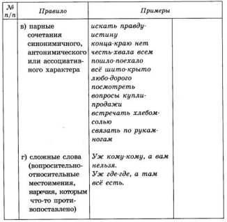
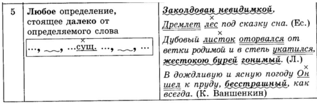
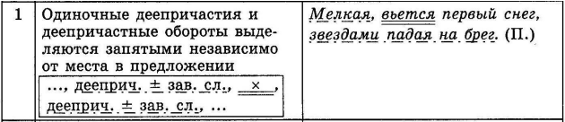
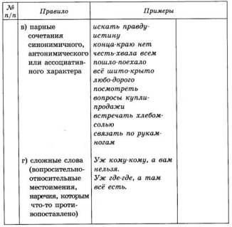
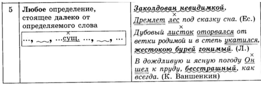
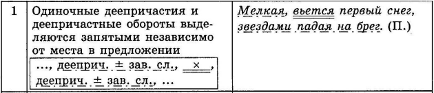

Все правила
- 1) Понятие фонетика. Фонетические особенности
- 2) Правописание окончаний существительных.
- 3) Правописание суффиксов существительных.
- 4) Правописание суффиксов прилагательных
- 5) Склонение имени числительного.
- 6) Правописание глагольных суффиксов -ова-, -ева-, -ива-, -ыва-.
- 7) Правописание личных окончаний глаголов
- 8) Правописание гласных в суффиксах глаголов прошедшего времени
- 9) Правописание суффиксов причастий
- 10) Правописание "Н" и "НН" в словах, отвечающих на вопрос "какой?" и образованном от существительных
- 11) Правописание "Н" и "НН" в словах, отвечающих на вопрос "какой?" и образованном от глагола
- 12) Правописание "Н" и "НН" - в словах, отвечающих на вопрос "кто?/что?/как?/каков?"
- 13) Слова исключения "Н" и "НН".
- 14) правописание "НЕ" с существительными/качественными прилагательными/наречиями которые оканчиваются на "О" или "Е"
- 15) Правописание "НЕ" с причастиями
- 16) Правописание "НЕ" со словами, которые оканчиваются на -мый
- 17) Правописание "НЕ" с отрицательными местоимениями и наречиями
- 18) Всегда раздельное написание с "НЕ" (Раскрыть те части речи, с которыми не всегда пишется раздельно)
- 19) Пунктуация в сложносочиненном предложении
- 20) Пунктуация в предложениях с однородными членами
- 21) Пунктуация в предложениях с обособленными определениями
- 22) Пунктуация с обособленными обстоятельствами
- 23) Пунктуация в предложениях с вводными словами
- 24) Пунктуация в предложениях с обращениями
- 25) Пунктуация в сложноподчиненных предложениях
- 26) Правописание проверяемых и непроверяемых безударных гласных.
- 27) Правописание чередующихся гласных.
- 28) Правописание о, е, ё после шипящих и ц.
- 29) Правописание неизменяемых приставок и приставок на -з, -с.
- 30) Правописание приставок пре и при.
- 31) Правописание -ы, -и после приставок.
- 32) Правописание ы/и после ц.
- 33) Правописание разделительного ь и ъ знаков.
- 34) Правописание ь знака после шипящих.
- 35) Имя существительное как часть речи.
- 36) Имя прилагательное как часть речи.
- 37) Имя числительное как часть речи.
- 38) Местоимение как часть речи.
- 39) Глагол как часть речи.
- 40) Наречие как часть речи.
- 41) Причастие и деепричастие как части речи.
- 42) Образование причастий.
- 43) Служебные части речи.
Все правила без смс и регистрации
-
1) Понятие фонетика. Фонетические особенности
Фонетика - раздел науки о языке, изучающий звуковую сторону
Изучение фонетики, в первую очередь, предполагает знание как звуков и букв (и их соотношение), так и знание тех фонетических процессов, которые происходят со звуками в потоке связной речи. Прежде всего, следует иметь четкое представление о соотношении
Звук - наименьшая единица устной речи. Звуки мы произносим
Буква - минимальная единица письменной речи. Буквы мы пишем и видим написанными (воспринимаем визуально).
Особенности фонетики:
1. Мягкий и твердый знаки звуков не обозначают.
2. Буквы Е, Ё, Ю, Я обозначают один звук, если стоят после мягкого
3. Буквы Е, Е, Ю, Я обозначают два звука, если они стоят в начале слова, после гласных, после разделительного мягкого и твердого знаков.
4. Буква И после мягких согласных обозначает один звук [и].
5. Буквы Ц. Ж, Шобозначают только твердые звуки.
6. Буквы Й, Ч, Щ обозначают только мягкие звуки.
7. Буквы Й, Р, Л, М, Н обозначают толькозвонкие звуки.
8. Буквы Х,Ч, Щ, Цобозначают только глухие звуки.
9. Буквы Ж, Ч, Ш, Щобозначают шипящие звуки.
10. Непроизносимые согласные звука не обозначают.
11. Гласные звуки - [a], [о]. [у]. [э], [ы], [и].
12. Буквы Е, Ё, Ю, Я, И, ь смягчают предшествующий согласный.
Основные фонетические процессы в области согласных:
1. Оглушение звонкого согласного перед глухим: книжечка - книжка, ка, ошибочка- ошибка.
2. Озвончение глухого согласного перед звонким: сделать, сбегать, сдача.
3. Смягчение твердого согласного перед мягким: степь [с'тэп], снег [с'н'эк].
4. Замена двух согласных одним - долгим шипящим или Ц и Ч: сшить [шыт"], смеяться [см'ийаца].
-
2) Правописание окончаний существительных.
Зависит от склонения и падежа
Гласные Е-И в окончании сущ.
1 скл.
2 скл.
3 скл.
Р.п
И(Ы)
-
И
Д.п
Е
-
И
П.п
Е
Е
И
Окончание сущ. на -ИЯ, -ИЕ, -ИИ
-ИЯ
-ИЕ
-ИИ
Р.п
И
-
-
Д.п
И
-
-
П.п
И
И
И
-
3) Правописание суффиксов существительных.
1. -ек-/-ик-, -чик
Правописание данных суффиксов определяется наличием или отсутствием беглости
гласных. Суффикс -ек- пишется тогда, когда при изменении формы слова гласный на месте
орфограммы пропадает (замочек – замочка). Суффикс -ик- пишется тогда, когда гласный
при изменении формы слова сохраняется (ключик – ключика). По этому же принципу
определяется написание суффикса -чик- (для обозначения уменьшительно-ласкательного
значения): барабанчик – барабанчика (маленький барабан).
2. Сочетания -енк-/-инк
Выбор гласного в данном случае зависит от слова, от которого образовано данное
существительное. Если слово образовано от существительного, оканчивающегося на -ина,
то пишется -инк-, например: слово горошинка образовано от существительного горошина,
поэтому пишется сочетание -инк-. В остальных случаях (если существительное образовано
от существительного, оканчивающегося не на -ина) пишется сочетание -енк-, например:
существительное вишенка образовано от слова вишня, которое не оканчивается на -ина,
поэтому пишется сочетание -енк-.
3. Сочетания -ечк-/-ичк
Выбор гласного в данном случае зависит от слова, от которого образовано данное
существительное. Если слово образовано от существительного, оканчивающегося на -ица,
то пишется -ичк-, например: слово водичка образовано от существительного водица,
поэтому пишется сочетание -ичк-. В остальных случаях (если существительное образовано
от существительного, оканчивающегося не на -ица) пишется сочетание -ечк-, например:
существительное чашечка образовано от слова чашка, которое не оканчивается на -ица,
поэтому пишется сочетание -ечк-.
4. -ец-/-иц
Правописание данных суффиксов зависит от грамматического рода имени
существительного. В существительных мужского рода пишется только суффикс -ец-
(молодец – сущ. м.р.), женского рода – -иц- (красавица – сущ. ж.р.). В среднем роде
правописание суффиксов зависит от ударения. Если ударение падает на окончание, то
пишется суффикс -ец- (письмецо́
). Если ударение падает не на окончание, то пишется
суффикс -иц- (кре́слице).
5. -оньк-/-еньк
Правописание этих суффиксов зависит от качества предшествующего согласного.
После твердого согласного пишется суффикс -оньк- (берёзонька), после мягких и шипящих
– -еньк- (реченька). Есть три слова-исключения: заинька, паинька, баиньки. В них есть
только суффикс -иньк-.
6. -чик-/-щик-
Данное правило распространяется на слова, которые имеют значение профессии,
рода деятельности, занятия. Выбор согласного в данных суффиксах зависит от
предшествующего согласного. Если перед суффиксом стоит согласный д, т, з, с, ж, то
пишется суффикс -чик- (запомни абсурдное шуточное словосочетание дети за сажей, в
котором представлены все согласные, после которых пишется -чик-), например: грузчик. В
остальных случаях пишется суффикс -щик-, например: кафельщик.
7. Неизменяемые суффиксы
Помним о том, что написание таких суффиксов ни от чего не зависит, они
существуют только в одном варианте. Запоминаем их, как словарные слова.
-отн-: беготня
-овн-: болтовня
-от-: красота
-ет-: нищета
-ость-: верность
-есть-: свежесть
-еств-: содружество
-изн-: новизна
-
4) Правописание суффиксов прилагательных
-
5) Склонение имени числительного.
У имён числительных нет единой системы склонения: числительное один склоняется какместоимение этот; числительные два, три, четыре имеют особую систему склонения (четыре, четырёх, четырём, четыре, четырьмя, о четырёх); числительные отпяти до двадцати и тридцать склоняются как существительные 3-го склонения; числительные сорок, девяносто, сто имеют две падежные формы: в им. и вип. - сорок, девяносто, сто, в остальных падежах- сорока, девяноста, ста; числительные от пятидесятидо восьмидесяти и от двухсот до девятисот при склонении изменяют обе части; числительные тысяча, миллион, миллиард склоняются как существительные соответствующего типа склонения (1-го и 2-го).
-
6) Правописание глагольных суффиксов -ова-, -ева-, -ива-, -ыва-.
-
7) Правописание личных окончаний глаголов
Личная форма глагола — это такая форма, в которой глагол изменяется по лицам.
С точки зрения грамматики лицо глагола выражается с помощью окончания, которое называется личным. Личные окончания глаголов связаны с местоимениями. Эти местоимения обозначают лицо, которое выполняет действие или участвует в нем.
В русском языке есть три формы лица глагола в единственном и множественном числе:
1. Первое лицо показывает, что действие совершает тот, кто говорит:
я плаваю — мы плаваем;
я смеюсь — мы смеемся.
2. Второе лицо отражает действие собеседника:
ты плаваешь — вы плаваете;
ты смеешься — вы смеетесь.
3. Третье лицо указывает на то, что субъект действия не является ни говорящим, ни собеседником:
он, она, оно плавает — они плавают;
он, она, оно смеется — они смеются.
Исключения:
-
8) Правописание гласных в суффиксах глаголов прошедшего времени
Правило правописания гласных в суффиксах глаголов прошедшего времени: в глаголах прошедшего времени перед -л пишется тот же суффикс, что и в неопределённой форме перед -ть.
Пример: подклеил - подклеить
-
9) Правописание суффиксов причастий
-
10) Правописание "Н" и "НН" в словах, отвечающих на вопрос "какой?" и образованном от существительных
Вопрос КАКОЙ?
Если слово отвечает на вопросы определения (какой? какая? какое?
какие? и другие), то нужно определить, от чего это слово образовано: от
имени существительного или глагола.
Если слово образовано от существительного, то смотри следующую
схему (правило 1):
Комментарий:
Слово карманный не является исключением, отвечает на вопрос какой,
образовано от существительного карман, основа которого оканчивается на Н.
К этой основе добавляем суффикс прилагательного -н-, в результате
получаем удвоенную Н на стыке морфем: карман + н = карманный.
Слово утренний не является исключением, отвечает на вопрос какой,
образовано от существительного утро. К основе существительного
добавляем суффикс -енн-, в котором всегда пишется двойная Н: утр + енн =
утренний.
В суффиксах -ан-, -ян-, -ин- всегда используем одну Н. Суффиксы -ани -ян- указывают на материал, из которого сделан предмет (кожаный,
ледяной), а суффикс -ин- используется в притяжательных прилагательных
(отвечают на вопрос чей?) – лебединый.
Обратите внимание на особые случаи, которые указаны после схемы на
рисунке.
-
11) Правописание "Н" и "НН" в словах, отвечающих на вопрос "какой?" и образованном от глагола
Если слово образовано от глагола, то смотри следующую схему
(правило 2):
Комментарий:
Если хотя бы на один вопрос из четырех вы отвечаете «да», то пишем
НН (это причастие). Если на все 4 вопроса Вы отвечаете «нет», то пишется Н
(это отглагольное прилагательное).
Слово организованный образовано от глагола (организовать),
оканчивается на -ованный, поэтому пишу НН.
Слово скошенный образовано от глагола (скосить), не оканчивается на
-ованный, но есть приставка с-, поэтому пишу НН.
Слово кошенный (на лугу) образовано от глагола (косить), не
оканчивается на -ованный, в нем нет приставки, но есть зависимое слово
(кошенный где? на лугу), поэтому пишу НН.
Слово решённая образовано от глагола (решить), не оканчивается на -
ованный, в нем нет приставки, нет зависимых слов, но образовано от глагола решить совершенного вида (отвечает на вопрос что сделать), поэтому пишу
НН.
Слово печёный образовано от глагола (печь), не оканчивается на -
ованный, в нем нет приставки, нет зависимых слов, образовано от глагола
несовершенного вида (глагол отвечает на вопрос что делать), поэтому пишу
одну Н (в этом случае на 4 вопроса мы отвечаем «нет».
Обратите внимание на то, что приставка НЕ- не влияет на написание
НН. Например, в словосочетании некрашеные стены слово некрашеные
нужно анализировать без учета приставки: образовано от глагола (красить),
не оканчивается на -ованный, в нем нет приставки, нет зависимых слов,
образовано от глагола несовершенного вида (глагол отвечает на вопрос что
делать), поэтому пишу одну Н
-
12) Правописание "Н" и "НН" - в словах, отвечающих на вопрос "кто?/что?/как?/каков?"
Вопрос КТО? ЧТО? или КАК?
Если слово отвечает на вопрос кто или что, то это существительное,
если на вопрос как, то это наречие (правило 3). Правило такое:
Комментарий:
Слово путаница отвечает на вопрос что? Это существительное. Оно
образовано от слова путаный. Количество Н в слове путаный определяем по
правилу 2: образовано от глагола путать – «4 нет», поэтому в слове
путаный пишется одна Н. Следовательно, в существительном путаница тоже
пишется одна Н.
Такой же образец для рассуждения используем при разборе наречий
Вопрос КАКОВ? (краткая форма) (правило 3)
Комментарий:
Если Вы можете заменить краткую форму глаголом, то это краткое
причастие и в нем пишется одна Н всегда (пример на схеме – семена
рассеяны).
Если заменить глаголом краткую форму Вы не можете, то это краткое
прилагательное, и пишем столько Н, сколько в полной форме этого
прилагательного (поля пустынны – заменить глаголом нельзя, полная форма
пустынный, поэтому в краткой форме сохраняем НН). В кратком
прилагательном мужского рода вне зависимости от полной формы всегда
пишется одна Н: мальчик воспитан.
-
13) Слова исключения "Н" и "НН".
1. Когда Вы работаете со словом, в котором есть орфограмма
правописание Н-НН в различных частях речи, то прежде всего Вам
необходимо проверить, относится ли рассматриваемое слово к исключениям.
СПИСОК СЛОВ-ИСКЛЮЧЕНИЙ
Обратите внимание на то, что во всех словах первого столбика пишется
одна Н, но как только у слова появляется приставка (безветренный,
изжёванный и т.д.), зависимое слово (кованный кем-то, раненный под
Москвой и др.) или меняется значение слова (названное имя, посаженный
вовремя, сын, прощенный отцом), то появляется вторая Н.
2. Если анализируемое слово не является исключением, то
необходимо определить, на какой вопрос отвечает слово.
-
14) правописание "НЕ" с существительными/качественными прилагательными/наречиями которые оканчиваются на "О" или "Е"
Правило 1. Правописание НЕ с существительными, качественными
прилагательными (полными и краткими) и наречиями, которые
оканчиваются на -о или -е
Обратите внимание на следующую схему:
Комментарий:
Есть только 2 признака, которые влияют на раздельное написание НЕ с
существительными, качественными прилагательными и наречиями на -о/-е:
противопоставление с союзом А (обращаю ваше внимание, что только с этим
союзом) и наличие слов далеко, отнюдь, вовсе, ничуть, нисколько, никогда и
других зависимых слов с НИ.
Образец для рассуждения:
Не добрый, а злой человек: качественное прилагательное, есть
противопоставление с союзом А, поэтому пишу частицу НЕ раздельно.
Далеко не безразлично: наречие, противопоставления с союзом А нет,
но есть слово далеко, поэтому пишу частицу НЕ раздельно.
В остальных случаях частица НЕ с указанными частями речи пишется
слитно, например: негромко читал – наречие, нет противопоставления с
союзом А, нет слов далеко, отнюдь, вовсе, ничуть, нисколько, никогда и
других зависимых слов с НИ, поэтому пишу частицу НЕ слитно
-
15) Правописание "НЕ" с причастиями
Правило 2. Правописание НЕ с причастиями
Обратите внимание на следующую схему:
Комментарий:
В данной схеме есть 3 признака, в соответствии с которыми слово
должно писаться с НЕ раздельно:
1. Краткая форма причастия: рассказ (каков?) не прочитан – краткая
форма, поэтому пишу раздельно.
2. Противопоставление с союзом А (и только с этим союзом): не
прочитанный, а просмотренный рассказ – полная (не краткая) форма
причастия, есть противопоставление с союзом А, поэтому пишу раздельно.
3. Зависимые слова: вовремя не опубликованный рассказ – полная (не
краткая) форма, нет противопоставления с союзом А, но есть зависимое
слово (не опубликованный (когда?) вовремя), поэтому пишу раздельно.
ОБРАТИТЕ ВНИМАНИЕ НА ТО, ЧТО НЕ ВЛИЯЮТ НА РАЗДЕЛЬНОЕ
НАПИСАНИЕ НЕ С ПРИЧАСТИЯМИ ЗАВИСИМЫЕ СЛОВА, КОТОРЫЕ
ЯВЛЯЮТСЯ НАРЕЧИЯМИ МЕРЫ И СТЕПЕНИ (ПОЧТИ, СОВСЕМ,
ЧРЕЗВЫЧАЙНО, ОЧЕНЬ, СОВЕРШЕННО, КРАЙНЕ, АБСОЛЮТНО,
ВЕСЬМА, ОТЧАСТИ). Например: почти непрочитанный рассказ – полная (не
краткая) форма, нет противопоставления, есть зависимое слово, но оно
является наречием меры и степени (почти) и оно не влияет на раздельное
написание, поэтому пишу слитно.
В остальных случаях пишу НЕ с причастиями слитно, например:
непрочитанный рассказ – полная (не краткая) форма, нет
противопоставления с союзом А, нет зависимых слов, поэтому пишу слитно
-
16) Правописание "НЕ" со словами, которые оканчиваются на -мый

Комментарий:
В этом случае необходимо проанализировать словосочетание и
посмотреть, есть ли при слове зависимые слова в творительном падеже. Если
такое зависимое слово есть, то это причастие с НЕ пишется раздельно (по
правилу 2), например: не растворимое (чем?) водой вещество. Если такого
зависимого слова нет, то пишем раздельно, например: нерастворимое (в
чём?) в воде вещество.
-
17) Правописание "НЕ" с отрицательными местоимениями и наречиями
Комментарий:
В этом случае все зависит от того, есть ли между частицей и
местоимением предлог. Если он есть, то НЕ пишем раздельно, например: не у
кого. Есть предлог У, поэтому пишу раздельно. Если предлога нет, то
местоимение с частицей пишется слитно: некого
-
18) Всегда раздельное написание с "НЕ" (Раскрыть те части речи, с которыми не всегда пишется раздельно)
Когда вы работаете с орфограммой «Правописание НЕ с различными
частями речи», прежде всего, вы должны посмотреть, употребляется ли слово
без частицы НЕ. Если не употребляется, то вне зависимости от части речи его
необходимо писать слитно:
Следующий этап действий, если слово без НЕ употребляется, заключается в
том, что необходимо определить часть речи слова, в котором есть
орфограмма правописания слитного или раздельного написание частицы НЕ.
Первая группа слов представляет те части речи, с которыми частица НЕ
пишется всегда раздельно:
Комментарий:
1. К пункту 3 и 4: вы помните, что на занятии, посвященном
изучению имени прилагательного, мы рассматривали разряды. Напомню:
если прилагательное отвечает на вопрос чей?, это притяжательное
прилагательное (с такими прилагательными частица НЕ пишется раздельно
согласно пункту 4 схемы). Если прилагательное может образовать краткую форму, степень сравнения и/или от него может быть образовано наречие,
оканчивающееся на -о или -е, то это качественное прилагательное (для этого
разряда прилагательного действует отдельное правило правописания, о нем
будет сказано ниже). Остальные прилагательные являются относительными
(с ними частица НЕ всегда пишется раздельно согласно пункту 3 схемы).
2. К пункту 12: обратите внимание на перечень слов, с которыми
частица НЕ пишется раздельно:
-
19) Пунктуация в сложносочиненном предложении
Когда вы работаете с предложением, то сначала вам необходимо найти
в нём грамматическую основу (подлежащее и сказуемое). Это необходимо
сделать, чтобы определить тип предложения по составу. Если в предложении
есть одна грамматическая основа, то предложение простое; если в
предложении две и более грамматических основ, то предложение сложное.
От этого будет зависеть расстановка знаков препинания
Блок 1. Если предложение сложное с сочинительными союзами
(сложносочиненное предложение).
Сложносочиненное предложение – конструкция, состоящая из
нескольких простых предложений, соединенных сочинительными союзами.
Сочинительные союзы делятся на 3 группы:
Соединительные – и, да (в значении «и»), также, тоже, не только...но и,
как... так и, ни...ни, и...и.
Противительные – а, но, да (в значении «но»), однако, зато.
Разделительные – или, или...или, либо, либо...либо, не то... не то,
то...то
Помним такое правило: в сложносочиненном предложении между
грамматическими основами обязательно должна стоять запятая: ¹Ему стало
досадно, и ²он забарабанил в закрытую дверь ногой и шашкой.
НО!!! ОБРАТИ ВНИМАНИЕ!!! Запятая между частями
сложносочиненного предложения НЕ СТАВИТСЯ, если в абсолютном
начале предложения есть общий для частей второстепенный член. Как
правило, это обстоятельство со значением времени (когда?) или места (где?):
В саду ¹было сумрачно и ²пахло прелой листвой и грибами. В данном
предложении есть общий второстепенный член в саду, который относится и к
первой, и ко второй грамматической основе: в саду было сумрачно и в саду
пахло прелой листвой и грибами. Таким образом показывается
одновременность происходящих действий, и в этом случае запятая в
сложносочиненном предложении между частями не ставится. Учитывайте
этот пункт при расстановке знаков препинания в предложениях.
Блок 2. Если предложение простое (с одной грамматической
основой)
Если предложение имеет только одну грамматическую основу, то
проанализируй прежде всего это предложение на наличие в нём однородных
членов предложения.
Напомню, что однородные члены предложения – это такие члены
предложения, которые:
между собой независимы (нельзя задать вопрос от одного слова к
другому);
относятся к одному слову;
отвечают на один и тот же вопрос.
Например: Бабушка вяжет чулок и по привычке ворчит на меня и
сестрёнку.
В предложении есть одна грамматическая основа – бабушка вяжет и
ворчит, поэтому предложение простое.
Разбирая грамматическую основу, отметим, что в ней есть однородные
члены предложения – сказуемые (вяжет и ворчит – соотносится с
подлежащим бабушка, отвечают на один и тот же вопрос что делает?).
Кроме того, в предложении есть другие однородные члены – дополнения
(ворчит на кого? на меня и на кого? сестрёнку).
-
20) Пунктуация в предложениях с однородными членами
Рассмотрим случаи расстановки знаков препинания.
Если в предложении есть два однородных члена предложения и они
соединены одиночными союзами (соединительными или разделительными),
то запятая между такими членами предложения не ставится: Ветер по морю
гуляет и кораблик подгоняет. В этом предложении одиночный союз и
соединяет два однородных сказуемых, поэтому запятая между ними не
ставится.
Обратите внимание на следующую таблицу:
Комментарий. При интонации перечисления после каждого однородного
члена предложения ставится запятая.
Комментарий. Очень часто допускаются ошибки в расстановке запятых при
повторяющемся союзе. Обратите внимание на то, как расставлены знаки
препинания в схемах а) и б). В начале однородного ряда первая запятая
ставится после первого однородного члена предложения.
Комментарий. Особое внимание обратите на этот пункт, так как в
предложениях на первый взгляд может показаться, что здесь только
одиночный союз и запятая не должна ставиться. Однако в примере мы видим
пары однородных членов предложения (первая пара – мог изъясняться и
писал, вторая пара – танцевал и кланялся). Внутри каждой пары есть
одиночный союз и, поэтому между однородными членами в рамках одной
пары запятая не ставится (мог изъясняться_и_писал / танцевал_и_кланялся).
Но сами пары в предложении соединяются интонацией перечисления,
поэтому между парами запятая присутствует
Комментарий. С первого класса мы помним, что перед союзами а, но и
другими противительными союзами всегда ставится запятая.
Комментарий. Обратите внимание на то, что запятая ставится только перед
второй частью такого союза!
Отдельно необходимо сказать о том, какие слова не являются
однородными членами, а значит, запятая между ними не ставится

-
21) Пунктуация в предложениях с обособленными определениями
Напоминаю, что любой анализ предложения, связанный с расстановкой
знаков препинания, должен начинаться с выделения грамматической основы.
Это поможет Вам определить, из скольких частей состоит предложение.
После выделения главных членов предложения (подлежащего и/или
сказуемого) Вы должны прочитать предложение и обратить внимание на
интонацию, с которой произносится это предложение. Если для фразы
свойственна интонация уточнения или выделения, которая сопровождается
паузой, особым понижением или повышением голоса, то в предложении есть
обособление.
Обособление – выделение по смыслу и интонационно
второстепенных членов предложения с целью придать им
самостоятельность, привлечь к ним внимание. Обособленные члены
содержат элемент добавочного сообщения.
На сегодняшнем занятии мы остановим своё внимание на
обособленных согласованных определениях и обособленных
обстоятельствах.
Блок 1. Обособление согласованных определений
Согласованные определения – определения, которые согласуются с
определяемым словом в роде, числе и падеже: прочитанная книга (книга –
женский род, единственное число, именительный падеж; эти же
грамматические значения имеет и причастие прочитанная).
Рассмотрим случаи, когда согласованные определения обособляются:
Комментарий. Напоминаю, что к личным местоимениям относятся
такие слова, как я, ты, он, она, оно, мы, вы, они. Кроме того, обратите особое
внимание, что определение обособляется в любой позиции по отношению к личному местоимению: хоть перед личным местоимением (пример 1), хоть
после него (пример 2)
Комментарий. Этот пункт касается предложений, где однородные
одиночные определения находятся в позиции после определяемого слова.
Если определения находятся перед существительным, то обособления нет:
Летний дождь, обильный, тёплый, напоил влагой землю. В этом примере
определения обильный и тёплый находятся в позиции после
существительного, поэтому обособляются, а определение летний находится
перед существительным, поэтому оно не обособлено.
Комментарий.Этот пункт более распространён. Он, как правило,
касается пунктуации при причастном обороте. Мы помним, что причастный
оборот, который находится после определяемого слова, обязательно
выделяется запятыми: Яблони, растущие в саду, расцвели. Определяемое
слово яблони стоит перед причастным оборотом растущие в саду, поэтому
обособление этого оборота обязательно. Этот же пункт «работает» тогда,
когда в качестве распространенного определения выступает адъективный
оборот (прилагательное с зависимым словом). Пример виден в таблице.
Если причастный или адъективный оборот находится перед
определяемым словом, то обособления нет: Растущие в саду яблони
расцвели
Комментарий. В предыдущем пункте мы говорили, что если
определение стоит перед определяемым словом, то обособления нет. Однако
обособление возможно, если определение, находящееся перед определяемым
словом, имеет обстоятельственное значение причины или уступки. Как это
определить? Очень просто. Такой причастный оборот Вы с лёгкостью
сможете переделать в придаточное предложение со значением причины или
уступки. Привлечённые светом, бабочки долго кружились около фонаря.
Такое предложение можно переделать в сложноподчинённое предложение с
придаточным причины: Бабочки долго кружились около фонаря, так как
были привлечены светом.
То же самое можно сказать и о втором примере, который представлен в
таблице

Комментарий. Что значит далеко? Это значит, что определяемое слово
и определение (распространённое или нераспространённое) разделяет хотя
бы одно слово. Примеры в таблице это наглядно демонстрируют: Заколдован
невидимкой, дремлет лес под сказку сна. Определение заколдован
невидимкой и определяемое слово лес разделяет одно слово – сказуемое
дремлет, поэтому распространённое определение находится далеко от
определяемого слова и поэтому обособлено
-
22) Пунктуация с обособленными обстоятельствами
Блок 2. Обособление обстоятельств
Подавляющее большинство обособленных обстоятельств выражено
деепричастным оборотом. Реже это могут быть уточнения или сравнительные
обороты (со сравнительными союзами как, будто, словно, точно).
Разберём пунктуацию при обстоятельствах. Итак, когда обособляются
обстоятельства?

Комментарий. Это правило мы знаем еще с 7 класса, когда на уроках
русского языка изучали деепричастие. Обратите внимание, что это касается
как одиночного деепричастия, так и деепричастного оборота.
Обратите внимание!!! Если в предложении есть 2 деепричастных
оборота, то необходимо определить следующее: относятся ли эти обороты к
одному и тому же сказуемому? Разберём два примера и прокомментируем
каждый.
1) Предложение без знаков препинания:
Заря загорелась полыхая всеми оттенками алых и жёлтых красок и
освещая всё вокруг.
В этом предложении есть два деепричастных оборота: 1 – полыхая
всеми оттенками алых и жёлтых красок; 2 – освещая всё вокруг. Они оба
относятся к одному и единственному в предложении сказуемому загорелась:
загорелась (как? что делая?) полыхая всеми оттенками алых и жёлтых
красок и (как? что делая?) освещая всё вокруг. В результате получается, что
эти деепричастные обороты по отношению друг к другу однородные,
соединены одиночным союзом и, поэтому между ними запятая не ставится. В
предложении есть только одна запятая, которая разделяет основное
предложение от деепричастных оборотов. В итоге предложение имеет
следующий вид (со знаками препинания):
Заря загорелась , полыхая всеми оттенками алых и жёлтых красок и
освещая всё вокруг.
2) Предложение без знаков препинания:
У реки сидели мальчики о чём-то тихо беседуя и наблюдая за
поплавками плели корзины.
В этом предложении тоже есть два деепричастных оборота: 1 – о чёмто тихо беседуя; 2 – наблюдая за поплавками. Однако первый
деепричастный оборот соотносится с первым сказуемым: сидели (что делая?)
о чём-то тихо беседуя. Второй деепричастный оборот соотносится со
вторым сказуемым: плели (что делая?) наблюдая за поплавками. Поэтому эти
обороты по отношению друг к другу не являются однородными, а значит,
каждый оборот должен быть обособлен отдельно. В итоге предложение
имеет следующий вид (со знаками препинания):
У реки сидели мальчики , о чём-то тихо беседуя , и , наблюдая за
поплавками , плели корзины.
Это еще раз обосновывает тот факт, что в начале работы с
предложением необходимо находить грамматическую основу и затем
приступать к анализу пунктуации.
Комментарий. Уточнение – сужение объёма понятия . ограничение
его. Как правило, последующее слово уточняет предыдущее. Уточняющие
члены предложения не содержат дополнительного сообщения, не служат
добавочным сказуемым. Чаще всего уточняющими являются обстоятельства
места и времени. Это хорошо продемонстрировано примерами в таблице.
ОБРАТИТЕ ВНИМАНИЕ!!! КОГДА ОБСТОЯТЕЛЬСТВА НЕ
ОБОСОБЛЯЮТСЯ!!!

Информация для справки
Как отличить причастие от деепричастия и наоборот?
-
23) Пунктуация в предложениях с вводными словами
Традиционно начинаем анализ предложения с выделения
грамматических основ.
Вводные конструкции – это специальные слова, словосочетания и
предложения, при помощи которых говорящий выражает своё отношение к
тому, что он сообщает, или характеризует способ оформления мыслей.
Вводные конструкции не вносят в предложение дополнительных
сведений, а только оценивают сообщение, заключённое в предложении. Они
не отвечают на вопросы, не являются членами предложения. Их можно
изъять из состава предложения, сохраняя его структуру, хотя смысл немного
изменится: исчезнет отношение говорящего. В устной речи для вводных
конструкций характерна особая интонация. На них делают ударение.
К несчастью (вв.сл.), проливные дожди продолжают затапливать поля.
НО сравни: К несчастью (не вв.сл.) его никто не остался равнодушным.
В письменной речи вводные конструкции выделяются запятыми.
Чтобы правильно выделять знаками препинания вводные конструкции, надо
хорошо знать их значение. Различают несколько основных групп вводных
конструкций по их значению
Многие из приведённых в таблице слов могут быть и не вводными
словами, а обычными членами предложения (обыкновенно сказуемыми и
обстоятельствами) и тогда, естественно, не выделяются запятыми. В устной
речи помогает интонация.
Особые трудные случаи!!! ОБРАТИТЕ НА НИХ ВНИМАНИЕ!!!
Как отличить вводное слово от омонима?
ОБРАТИ ВНИМАНИЕ!!!
Есть слова (союзы, частицы), которые тоже не отвечают ни на какие
вопросы и не являются членами предложения, поэтому их часто принимают
за вводные и выделяют запятыми.
Принимаются за вводные слова некоторые наречия, существительные с
предлогами, фразеологические обороты. Эти слова нужно по возможности
запоминать.
Не являются вводными словами и не выделяются запятыми
следующие слова:
Авось, большей частью, будто бы, буквально, в довершение, в конечном
счёте, в то же время, в то же время, вдобавок, вдруг, ведь, весьма, во что
бы то ни стало, вот, вряд ли, всё же, всё равно, все-таки, даже, едва ли,
единственно, изредка, именно, иногда, исключительно, к тому же, как будто
(= точно), как бы, как раз, лишь, между тем, на всякий случай, на редкость,
наверняка, небось, непременно, неужели, однажды, определённо, особенно,
отчасти, по большому счету, по замыслу, по постановлению, по
предложению, по распоряжению, по решению, по совету, по требованию, по
указанию, поистине, по-прежнему, потому, почти, приблизительно,
примерно, притом, причём, словно, стало, тем временем, тем не менее,
якобы
-
24) Пунктуация в предложениях с обращениями
ОБРАЩЕНИЕ
Обращение – это слово или сочетание слов, которые называют того
(то), к кому (к чему) обращаются с речью (с вопросом, с рассказом, с
советом, с просьбой, побуждением к действию: Храни меня, мой талисман.
Чаще всего обращение – это существительное в именительном падеже.
Но в роли обращения могут выступать субстантивированные слова (другие
части речи в роли существительного): Дорогие мои, любите произведения
Пушкина!
Личные местоимения ты и вы, как правило, бывают подлежащими и не
выступают в роли обращения. Иногда они могут входить в состав
распространенного обращения, пунктуационно выделяясь вместе с ним:
Здравствуй, князь ты мой прекрасный!
В устной речи обращения произносятся с особой, звательной
интонацией, а на письме выделяются запятыми или восклицательным
знаком
-
25) Пунктуация в сложноподчиненных предложениях
Сложноподчинённое предложение – такое сложное предложение,
которое состоит минимум из двух простых, связанных друг с другом
подчинительной связью. Следовательно, одна часть (простое предложение) в
его составе главной (заключена в [...]), а другая зависимой, придаточной
(заключена в (...)), прикрепляемой к главной подчинительными союзами и
союзными словами.
[¹Книга, (²которую вы сейчас держите в руках), поможет вам
справиться с заданиями].
Предложение сложное, так как содержит 2 грамматические основы: 1 –
книга поможет, 2 – вы держите. Второе простое предложение зависит от
слова книга: книга какая? Ответом на этот вопрос будет являться всё второе
предложение – которую вы сейчас держите в руках.
Поскольку одна часть зависит от другой, такое предложение считается
сложноподчинённым.
Кроме того, важным признаком сложноподчинённого предложения
является наличие в придаточной (зависимой) части средства связи – союза
или союзного слова.
Ниже в таблице представлены типы придаточных предложений,
вопросы, на которые такие придаточные отвечают, союзы и союзные слова, с
помощью которых могут присоединяться придаточные предложения к
главным
Тип придаточного
Вопросы
Средства связи
Союзы
Союзные слова
Определительное
(относится к
существительному)
какой?
-
какой? - который, какой, чей,
что, где, когда, куда,
откуда
Изъяснительное
(относится к словам со
значением речи, мысли,
чувства (говорят, ...;
слышно, ...; трудно
понять, ...; мысль, слух,
вопрос, вера, сообщение,
решение и т.п.))
падежные
вопросы
что, как, будто,
чтобы, союз-частица
ли
кто, кого, кому...,
что, чего, чему...,
какой..., какому...,
сколько, где, куда,
как, откуда, когда,
почему, зачем,
насколько
Образа действия
(относится к глаголу из
главного предложения)
Как? Каким
образом?
чтобы
как
Места (относится ко
всему главному
предложению)
Где? Куда?
Откуда?
-
где, куда, откуда
времени (относится ко
всему главному
предложению)
Когда? Как
долго? С
каких пор?
До каких
пор?
когда, пока, едва, как
только, лишь только, в
то время как, с тех пор
как, перед тем как, до
тех пор пока, после
того как, по мере того
как, как вдруг, тогда
как
-
Условия (относится ко
всему главному
предложению)
При каком
условии?
если, коли, когда, кабы,
раз, ежели, в случае
-
Цели (относится ко
всему главному
предложению)
Зачем? С
какой
целью?
чтобы, дабы, для того
чтобы, с тем чтобы,
затем чтобы, ради
того чтобы, во имя
того чтобы, лишь бы
только
-
Причины (относится ко
всему главному
предложению)
Почему?
Отчего? По
какой
причине?
потому что, оттого
что, так как,
вследствие того что,
благодаря тому что,
ввиду того что,
поскольку, ибо
-
Уступки (относится ко
всему главному
предложению)
Вопреки
чему?
Несмотря на
что?
хотя..., но; пускай,
пусть, несмотря на то
что, вопреки тому
что, тогда как, даром
что, а ведь
как ни, где ни,
сколько ни, какой бы
ни, куда бы ни, кто
ни, что ни
Сравнительное
(относится ко всему
главному предложению)
Как?
Подобно
чему?
как (бы), будто (бы),
точно, словно (бы), как
будто (бы), подобно
тому как, чем – тем
-
Следствия (относится
ко всему главному
предложению)
И что из
этого
последовало?
так что, в результате
чего, в связи с чем
-
Меры и степени
(относится к
прилагательному,
существительному,
наречию, глаголу со
значением количества,
качества)
В какой
мере? В
какой
степени?
что
насколько
Присоединительное
(добавочное замечание
со значением вывода,
следствия; относится ко
всему главному
предложению)
-
-
отчего, зачем,
почему, что, чего,
чему
Придаточная (зависимая) часть может располагаться в любом месте по
отношению к главной. Придаточная часть может быть:
1. В начале предложения: (¹Когда наступили тёплые дни), [²на
деревьях набухли почки].
2. В середине предложения (придаточное разрывает главное
предложение): [¹Деревня, (²где скучал Евгений), была прелестный
уголок].
3. В конце предложения: [¹Скоро начнётся гроза], (²потому что
небо затянуто тучами)
Некоторые замечания по расстановке знаков препинания в
сложноподчинённом предложении с придаточным определительным.
Придаточные определительные всегда стоят после существительным, к
которым они относятся. Особое внимание необходимо уделить
конструкциям, где наблюдается «дистантное» расположение союзного слова
который. Рассмотрим два предложения:
1. [¹Дом, (²в котором мы жили), раньше принадлежал известному
купцу].
2. [¹Коляска подъезжала к усадьбе барыни], (²о невероятной
жестокости и жадности которой в округе ходили самые невероятные
слухи).
В первом предложении союзное слово который стоит сразу после
определяемого слова, а во втором – далеко (на дистанции) от него.
Обратите внимание!
1. Если зависимым словом при деепричастии является союзное слово
который, то оно не отделяется запятой от деепричастия: запятая ставится
перед деепричастным оборотом, а после слова который – нет: [¹Вот книга],
(²прочитав которую ты многое для себя откроешь).
2. Никогда не ставится запятая после союзного слова который; сразу
убирайте те варианты, в которых указана запятая после этого слова.
3. Союзное слова который находится только в придаточной части,
поэтому ищите в главном предложении существительное или местоимение,
которые придаточная часть характеризует или поясняет.
Если придаточные определительные однородные и соединяются
неповторяющимся союзом и, то между ними запятая не ставится.
[¹Теплота, (²с которой дочь говорила о своей матери) и (³которая
освещала её лицо), невольно привлекала внимание]
-
26) Правописание проверяемых и непроверяемых безударных гласных.
Понятие безударных гласных
Безударные гласные — это буквы, которые находятся в слабой позиции, то есть на них не падает ударение. Такие гласные делятся на два типа:
- проверяемые;
- непроверяемые.
А еще есть безударные гласные в корнях с чередованием.
Ударение — это выделение голосом гласного звука одного из слогов через повышение тона и длинное звучание. Безударные и ударные гласные в русском языке могут находиться в разных частях слова:
- приставка;
- корень;
- суффикс;
- окончание.
Чтобы верно выбрать правило, нужно определить, в какой морфеме находится гласная.
Проверяемые безударные гласные
В русском языке мы проверяем написание гласных букв А, О, И, Е, Я, когда они обозначают безударные гласные звуки.
Проверяемые безударные гласные в корне слова — это гласные, которые можно проверить ударением с помощью подбора однокоренных слов или изменением грамматической формы слова.
Чтобы избежать ошибок и правильно писать слова с проверяемыми безударными гласными, нужно запомнить правило.
Чтобы проверить безударную гласную в корне слова нужно изменить слово так, чтобы эта гласная стала ударной.
Если гласная под ударением, значит ее хорошо слышно и очевидно, какую букву нужно написать. Если без ударения — применяем специальные правила.
В качестве проверочного слова может выступать:
-- Однокоренное слово (уменьшительно-ласкательные варианты, слова другой части речи).
- дождливый — дождь, лесной — лес.
-- Измененная форма этого же слова.
- грибы — гриб, зима — зимы.
Если в корне несколько безударных гласных, нужно подобрать слова для проверки каждой:
-- молодой — молод, молоденький.
Давайте узнаем, в корне каких слов есть проверяемые безударные гласные. При произнесении слов голосом выделяется один гласный звук, а все остальные гласные оказываются без ударения:
- соло́ма;
- украше́ние;
- при́городный.
В русском языке ударение в словах может падать на гласную любой морфемы:
1. Приставки:
- на́дпись
- о́тсвет
- вы́линять
2. Суффикса:
- отпили́ть
- свежо́
- удивле́ние
3.Окончания:
- золото́й
- трава́
- морско́й
Все эти слова объединяет то, что без ударения остались гласные корня, которые слышатся плохо. По этой причине могут возникать сомнения в выборе букв «о» или «а», «е» или «и».
-
27) Правописание чередующихся гласных.
Зависит от ряда условий:
1) буква в корне:
-лаг-/-лож- - положить
-раст-/-ращ-/-рос- - растение
Искл: росток, ростовщик, Ростислав, Ростов, подростковый, на вырост, отрасль
2) буква после корня
-кос-/-кас- +а - прикосновение
-бер-/-бир- - забирать
-пер-/-пир-
-дер-/-дир-
-гер-/-гир-
-тер-/-тир- - стереть
-мер-/-мир-
-блест-/-блист-
-жег-/-жиг-
-стел/-стил-
чет-/-чит-
Искл: сочетание
3) ударение:
В безударной позиции пишутся корни
-гор- - гореть
-клон- - наклонить
-твор- - творец
-зар- - заря
Под ударением пишем то, что слышим
2 скл:
Выгарь
Пригарь
4) значение корня
-скак-(долго)/-скоч-(1 раз) = скакать(много), вскочить(1 раз)
-мак-(погрузить)/-мок-(мокрый) = обмокнуть(погрузить), вымочить(мокрый)
-плав-(все остальное)/-плов-(пловец, пловчиха)
-равн-(одинаковый)/-ровн-(гладкий) = уравнение(одинаковый), ровный(прямой)
Искл:
равнение
равнина
все равно
поравну
ровесник
-
28) Правописание о, е, ё после шипящих и ц.
1. Орфограмма в корне:
Если есть опорное слово со звуком -э-, то после шипящих ппишу -ё-
Жёлтый - желтеть
Если такого слова нет, то [о]
ожог } сущ. => о
поджёг } глаг. => Ё
поджог дом
ожёг руку
2. В суффиксе/корне => определи
глагол
отлаг.сущ.
отглаг.прил.
прил.
||
\/
ржёшь
печеный
Отглаг.Искл.: Облицованный
3. Сущ., Прил., Нар.
Под ударением: о = горячо(наречие)
Без ударения: е = полотенце(сущ.)
Искл: еще, никчемный, нипочем, учеба, трещотка
-
29) Правописание неизменяемых приставок и приставок на -з, -с.
1. Правописание неизменяемых приставок
Правило гласит, что написание такого рода приставок ничем не
обосновано, оно одинаково вне зависимости от произношения. У таких
приставок только один вариант написания: о-, до-, по-, про-, на-, за-, пере-,
от(о)-, об(о)-, под(о)-, над(о)- и другие. Например, пройти, подобрать.
В этом блоке следует обратить внимание на следующие особенности.
- Приставка с- тоже относится к неизменяемым приставкам,
поскольку она существует только в одном возможном варианте (приставки зв русском языке не существует), например, сделать.
- В русском языке есть неизменяемая приставка пра- со значением
древности упоминаемого предмета или признака, например, прабабушка,
праязык (но запомни – прообраз).
- Обрати внимание на слова здесь, здание, здоровье, здравствуй, не
видно ни зги (фразеологизм со значением «ничего не видно»; в
древнерусском языке существительное зга обозначало кромешную тьму,
мрак, темное время суток, когда вообще ничего не видно, отсюда и значение
фразеологизма). В этих словах нет приставок, буква з входит в состав корня.
Вопрос: Как графически нужно обозначить орфограмму?
Ответ:
2. Правописание приставок, оканчивающихся на -з/-с
Написание таких приставок зависит от буквы, стоящей после этой
приставки.
Приставка оканчивается на –с, если
к, п, с, т, ф, х, ц, ч, ш, щ
Приставка оканчивается на –з, если
б, в, г, д, ж, з, л, м, н, р
Например, бесчисленный, безвкусный.
Обрати внимание на количество с в следующих словах: расчет (сущ.),
расчетливый (прил.), рассчитывать (глаг.).
Вопрос: Как графически нужно обозначить орфограмму?
Ответ:
-
30) Правописание приставок пре и при.
Выбор гласной в данных приставках зависит от значения слова,
которое выражается посредством приставки.
Пишем приставку ПРИ-, если:
– любое значение, связанное с
близостью, соединением: прилететь,
пришкольный;
– неполнота действия: приоткрыть,
присесть;
– доведение действия до конца:
приучить, приручить
Пишем приставку ПРЕ, если:
– =пере: преграда (=перегородить),
прервать (=перервать);
– =очень (высокая степень чеголибо): превкусный (очень вкусный),
преувеличить (очень увеличить).
Вопрос: Как графически нужно обозначить орфограмму?
Ответ:
Однако следует обратить внимание на следующие особенности!
Особенность 1
В языке есть некоторые слова, в которых написание при или пре
невозможно объяснить обозначенными выше значениями. Более того, в
некоторых из них при или пре уже не являются приставкой, а входят в состав
корня. Перечень этих слов представлен ниже.
Особенность 2
Помимо особых случаев, следует различать слова-омофоны с при- –
пре- (напоминаю, что омофонами называются слова, которые звучат
одинаково, но имеют различие в написании). Написание таких слов
напрямую зависит от их значения, от конкретного предложения, в котором
употребляются эти слова. Перечень таких слов представлен ниже
-
31) Правописание -ы, -и после приставок.
После русской приставки, оканчивающейся на согласные пишется буква -ы- в соответствии с произношением.
Пример: Подытожить
Буква -и- сохраняется
1) Искл: взимать
2) После пристаок оканчивающихся на гласный: поиграть
3) После иноязычных приставок: дез-, контр-, супер-, интер- и т.д.
4) После приставок: меж-, сверх-
5) В сложносокращенных словах на стыке корней
-
32) Правописание ы/и после ц.
Правописание букв «ы» и «и» после «ц» зависит от части слова, в которой находится пропущенная буква.
Буква «и» после «ц» пишется:
в корнях слов, например: цифра, цитрусовый, пациент;
в словах, оканчивающихся на -ция: иллюстрация, гравитация;
в суффиксах иноязычных слов: -ист- (публицист), -изм- (классицизм), -ирова- (провоцировать).
Буква «ы» после «ц» пишется:
в окончаниях, например: пальцы, с улицы, Люберцы, краснолицый, куцым (хвостом);
в суффиксе прилагательных -ын-, например: лисицын, царицыно (платье), Троицын (день);
в суффиксе глаголов -ыва-: поклацывать, побряцывать;
в корнях слов цыган, цыплёнок, цып-цып, цыпа, цыпки, на цыпочки, на цыпочках, цыц, цыкать, цыркать и в образованных от них словах.
Алгоритм написания гласных «ы» и «и» после «ц»:
1. Определить, в какой части слова находится пропущенная буква.
2. Если орфограмма находится в корне, то пишется буква «и», если это не слово-исключение.
3. Если существительное оканчивается на -ция, -ций, -цизм, -цист, пишется буква «и».
4. Если орфограмма находится в окончании или суффиксе, пишется буква «ы».
-
33) Правописание разделительного ь и ъ знаков.
Разделительный Ъ пишется:
Восле приставок, оканчивающихся на согласную букву, и только перед гласными Е, Ё, Ю, Я (подъезд, разъём);
В сложных словах после двух-, трёх-, четырёх- (двухъярусный, трёхъязычный);
В ряде заимствованных слов (адъютант, субъект, объект).
Разделительный Ь пишется:
В середине слова перед гласными Е, Ё, Ю, Я, И (вьюга, бурьян, пьём, платье, лисьи);
Перед О в иноязычных словах (бульон, павильон, почтальон, медальон).
Исключение составляют сложносокращённые слова (детясли, иняз) и сложные слова, пишущиеся через дефис (пол-юрты). В этих словах не нужен ни твёрдый, ни мягкий знак.
-
34) Правописание ь знака после шипящих.
Мягкий знак после шипящих пишется в следующих случаях:
В существительных женского рода 3-го склонения. Например: мышь, мелочь, вещь, рожь, помощь, блажь.
В окончаниях 2-го лица единственного числа глаголов будущего и настоящего времени. Например: чертишь, будешь, очистишь.
В формах глаголов повелительного наклонения. Например: отрежь, съешь, не морщься, спрячься и т. д.
В суффиксе глаголов неопределённой формы. Например: подстричь, обжечься, увлечься, течь.
В конце частиц и наречий. Например: лишь, бишь, вишь, навзничь, невмочь, прочь.
Мягкий знак после шипящих не пишется в следующих случаях:
В существительных женского рода 1-го склонения множественного числа в родительном падеже. Например: стуж (от стужа), пущ (от пуща), рощ (от роща), саж (от сажа).
На конце существительных мужского рода, а также прилагательных. Например: грач, врач, сторож, хорош, свеж, нищ, охоч и других.
-
35) Имя существительное как часть речи.
Имя существительное как часть речи включает в себя слова с предметным значением в широком смысле (стол, окно, липа, люди, счастье, мужество, красота и т. д.). Имя существительное отвечает навопросы: кто? или что?(кого? чего? и т.д).
Имена существительные имеютследующие постоянные признаки: отнесённость к определённому лекси- ко-грамматическому разряду (нарицательное/собственное, одушевлённое/неодушевлённое, конкретное/отвлечённое; собирательное, вещественное), род, склонение. К непостоянным признакам относятся падеж и число.
В составе предложения имена существительные могут выступать в функции любого члена. Например: Спокойный, бесцветный свет запада ещё отражался в окне будки. (И. Бунин); Урок - это зеркало общей и педагогической культуры учителя, мерило его интеллектуального богатства. (В. Сухомлинский); Люблю я пышное природы увяданье, в багрец и золото одетые леса. (А. Пушкин); Эта небольшая речка вьётся чрезвычайно прихотливо, ползёт змеёй. (И. Тургенев); Дело о наследстве задерживает меня ещё надолго. (А.Н. Толстой)
Лексико-грамматические разряды имён существительных
По лексическому значению и грамматическим признакам имена существительные делятся на следующие разряды
1. Нарицательные и собственные:
a) нарицательные имена существительные служат обобщёнными наименованиями предметов: страна, река, имя, город;
б) собственные имена существительные называют единичные предметы, выделенные из ряда однородных: Россия, Ока, Анна, Москва и т. д.
2. Одушевлённые и неодушевлённые: a) одушевлённые имена существительные называют предметы живой природы: человек, птица, рыба и др.;
б) неодушевлённые имена существительные называют предметы, явления и понятия, не причисляемые к живым существам: фонарь, компьютер, бумага и т. д.
Существительные одушевлённые и неодушевлённые различаются не только по смыслу (семантикой), но и по форме множественного числа винительного падежа. У одушевлённых существительных форма винительного падежа совпадает с формой родительного падежа, у неодушевленных - форма винительного падежа Полностью отождествлять понятия одушевлённого неодушевлённого существительного и понятия живого/неживого в природе нельзя. В современном русском языке вопреки биологическим представлениям о живой и неживой природе одушевлёнными являются существительные:
1) мертвец, покойник, кукла (игрушка), матрёшка, марионетка, адресат;
2) названия некоторых карточных фигур и карточных терминов: король, дама, валет, туз, козырь;
3) названия некоторых шахматных фигур: король, слон, конь, ферзь;
4) существительные среднего рода на ище, обозначающие сказочных персонажей: чудовище, страшилище;
5) существительные в переносном значении (метафорический переное с неживого предмета на живой): тюфяк («матрас», неодуш.) тюфяк (перен.мягкотелый человек», одуш.); при обратном переносе существительные сохраняют категорию одушевлённости, например: змей («змея», одуш.) (воздушный) змей («игрушка», одуш.).
Неодушевленными являются:
1)слова народ, толпа, войско, стая и др.;
2) слово персонаж и др.;
3) названия микроорганизмов: микроб, бактерия, а также слова эмбрион, куколка, личинка.
3. Конкретные, отвлечённые, собирательные и вещественные:
a) конкретные имена существительные называют предметы и явления. Такие существительные имеют формы ед.ч и мн. ч.: кресло - кресла, носок носки, дождь - дожди;
б) отвлечённые (абстрактные) имена существительные называют действия, признаки, состояния и т. д. Как правило, они имеют форму только ед. ч.: смех, белизна, синева, бег, дрожь, глухота;
в) собирательные имена существительные обозначают совокупность предметов или лиц как единое целое:студенчество, старьё, листва, молодёжь. Эти существительные имеют форму только ед. ч. и имеют соотносительные конкретные единичные существительные.
Ср.: листва лист, листья; тряпьё - тряпка, тряпки; студенчество студент, студенты; г) вещественные имена существительные обозначают вещество или однородную по составу массу: горох, молоко, песок, железо, масло; сливки, опилки, отруби,ищи. Они имеют формутолько ед. ч. (обычно) или только мн. ч. (редко).
В некоторых случаях вещественные, отвлечённые и собственные имена существительные могут употребляться во множественном числе, однако при этом у них происходят изменения в семантике.
Так, например, вещественные существительные во множественном числе могут обозначать не само вещество, а его сорта, марки (масло - масла животные, растительные, технические и т. д.); площади, занятые этим веществом (песок - пески. Ср.: дети играли в песке , экспедиция заблудилась в песках пустыни).
Отвлечённые имена существительные во множественном числе конкретизируют свою семантику. Ср.: чтение «процесс» и Ломоносовские чтения - «посвященные кому-либо» и т. п
Род имён существительных
Все имена существительные относятся к одному из трёх родов: мужской род - конь, мальчик, папа, воевода; женский род - земля, мать, дочь, рожь; средний род - кольцо, знамя, село.
В русском языке есть также группа имён существительных общего рода, которые могут обозначать лиц мужского и женского пола: большой (большая) сластёна, мой (моя) коллега.
Несклоняемые имена существительные иноязычного происхождения распределяются по родам следующим образом:
- к мужскому роду относятся названия лиц мужского пола (портье, конферансье), названия животных и птиц (кенгуру, фламинго);
- к женскому роду относятся названия лиц женского пола (леди, мадам);
- к среднему роду относятся неодушевлённые существительные (кашне, метро).
Исключения: к мужскому роду относятся слова кофе (напиток), сирокко (ветер), торнадо (ураган), сулугуни (сыр), пушту, бенгали и др. названия языков народов мира; к женскому роду относятся: цеце (муха), иваси (сельдь), кольраби (капуста), салями (колбаса); сущестнительные типа протеже, визави, хиппи, инкогнито относятся и к мужскому, и к женскому роду; только во миожественном числе употребляется слово жалюзи.
Род несклоняемых имён собственных иноязычного происхождения определяется по родовому слову: Сочи м. р. (город); Миссисипи - ж. р. (река); «Таймс» -ж. р. (газета); Онтарио- ср. р. (озеро). Рода аббревиатур определяется по роду ключевого слова: ВДНХ - ж. р. (выставка); ТАCС - ep. p. (агентство) и т. п.
Примечание. Если аббревиатура склоняется, то родопределя- ется по окончанию, например: вуз (-a, -у, -ом, -е) м. р. (ср.: высшее учебное заведение).
Род несклоняемых имён существительных выражается синтаксически в формах прилагательных, причастий и т. д.: крепкий кофе; сперва мадам за ним ходила, потом мосье её сменил. (П.)
При определении рода некоторых существительных возникают трудности; их надозапомнить: тюль, -я (м. р.), шампунь, -я (м. р.), рояль, -я (м. р.), вуаль, -и (ж. р.).
В случае затруднений следует обращаться к орфографи- ческому словарю.
Число имён существительных
Имена существительные изменяются по числам: книга - книги. Однако в русском языке есть существительные, имеющие форму только единственного числа (студенчество, молоко) или только множественного (ножницы, ворота).
Падеж и склонение имён существительных
Имена существительные изменяются по падежам, т. е. склоняются. К 1-му склонению относятся сущ. ж. р. им. р. с окончанием -а (-я) (стена, земля, юноша, дядя), а также существительные общего рода с окончанием -а (-я) (забияка, соня). Ко 2-му склонению относятся сущ. м. р. с нулевым окончанием (диван, гость) и ср. р. с оконча ниями -о (ё), -е (село, поле).К 3-му склонению относятся сущ. ж. р. с нулевым окончанием (мышь, кость). К разносклоняемым относятся существительное путь и десять существительных на -мя: бремя, стремя, пламя, знамя, вымя, время, племя, семя, имя, темя.
Имена существительные типа кормчий, столовая изменяются как прилагательные.
Существительные мать и дочь образуют формы косвенных падежей единственного числа (кроме вин. п.) и все формы множественного числа с наращением суффикса -ер: мать (дочь), матери (дочери), матерью(дочерью), матерями (дочерями) и т. д.
Существительное дитя в современномрусском языке обычно употребляется в формах им. п. и вин. п. Формы косвенных падежей ныне воспринимаются как архаичные: дитяти (род. п. и дат. п.), дитятею (тв.п.), (о) ди- тяти(пр. п.).
Вне типов склонения находятся несклоняемые существительные. Падеж таких существительных выражается синтаксически: новое пальто, нового пальто, в новом пальто.
-
36) Имя прилагательное как часть речи.
Имя прилагательное обозначает признак предмета, его качество: хороший, большой, медный и отвечает на вопросы какой? чей? Имена прилагательныеизменяются по родам (м. р.: красный, ж. р.: красная, ср. р.: красное), по числам (ед. ч.: красный, мн. ч.: красные; ед. ч.: полевой, мн. ч.: полевые), по падежам (им. п.: белый, род. п.: белого, дат. п.: белому, вин. п.: белый, тв. п.: белым, пр. п.: о белом)
Грамматические категории имени прилагательного полностью зависят от существительного, с которым оно согласуется, и, следовательно, являются несамостоятельными. Обозначая признак предмета, прилагательное в предложении чаще всего выступает в роли определения: Отговорила роща золотая берёзовым, весёлым языком… (C. Есенин) Прилагательное может также входить в состав сказуемого: В миг кораблекрушения вода нам показалась чрезвычайно холодной, но мы скоро обтерпелись. (И. Тургенев); Прозрачен стих, как северный апрель. (И. Северянин)
Лексико-грамматические разряды имён прилагательных
По лексическому значению и грамматическим признакам имена прилагательные делятся на разряды: качественные, относительные и притяжательные. Качественные прилагательные обозначают признак предмета, определяющий его качество: красивый цветок, сладкая ягода, жаркий день. Лексическое значение качественных прилагательных разнообразно: они могут обозначать цвет, физические свойстввкус, запах ит. д. Качественные прилагательные могупотребляться с уменьшительно-ласкательными суофиксами (зелёный зелёненький) и с наречиями меры и степени весьма, очень, гораздо, совершенно и т. п.: очень холодный, весьма приятный.
От качественных прилагательных можно образовать наречия на -о (-е): горячий горячо, певучий - певуче и отвлечённые имена существительные: красный - краснота, белый - белизна, молодой - молодость ит. д.
Относительные имена прилагательные называют признак по отношению к материалу, месту, действию, от- влечённому понятию: железная дверь, золотое кольцо, морской воздух, городская площадь. Относительные прилагательные имеют параллельные синонимические формы, выраженные предложно-именными сочетаниями: каменный дворец - дворец из камня; серебряный шар шар из серебра; институтское здание здание института Относительные прилагательные не имеют степеней сравнения и кратких форм.
Притяжательные имена прилагательные обозначают принадлежность предмета к какому-либо лицу или животному: отцов дом, бабушкины очки, лисий хвост.
Притяжательные прилагательные образуются только от одушевлённых существительных с помощью суффиксов -ий,-ов (-ев),-ин (-ын), овск- (-евск ), инск (ынск-): лисий , отцов , мамин , курицын, отцовский, материнский.
Сравнительная и превосходная степени имён прилагательных
Отличительной чертой качественных прилагательных является то, что они имеют степени сравнения: сравнительную (ближе, сильнее) и превосходную (ближайший, сильнейший). Как сравнительная, так и превосходная степени могут быть простыми (синтетическими) (добрее, добрейший) и сложными (аналитическими) (более добрый, самый добрый). Простая форма сравнительной степени образуется с помощью суффиксов -ее (-ей), -е: слабый - слабее, слабей; крутой - круче; простая -ейш-, -айш-: добрый - добрейший; великий - величайший. Сложная форма сравнительной степени: слова более (менее) + начальная форма прилагательного: добрый - более добрый, менее добрый; честный- более честный, менее честный; сложная форма превосходной степени может быть образована присоединением: 1)слова самый к прилагательному в начальной форме: высокий - самый высокий; добрый - самый добрый; 2) слов наиболее или наименее к прилагательному в начальной форме: нее удобный; 3) слов всего или всех к прилагательному в простой форме сравнительной степени: милее - всех милее; твёрдый - всего твёрже.
Краткие формы имён прилагательных
Большинство качественных прилагательных может иметь полную и краткую формы: долгий путь - путь долог; красивый сад - сад красив.
Краткие прилагательные образуются от полных путём отбрасывания окончаний: низкий горяч. У прилагательных с основой на шипящую в им. и вин. п. ед. ч. ь не пишется.
Прилагательные на -енн образуют краткую форму двояко: тождественный тождествен, тождественен.
Острый- остёрпостр, достойный - достоин, но: удостоенный - удостоен (причастие).
Краткие прилагательные изменяются только по числам и имеют форму рода: день светел - дни светлы; мальчик умён - девочка умна. Крааткие прилагательные в современном русском языке не склоняются, поэтому выступают только в роли сказуемого Пронесшейся грозою полон воздух. (Б. Пастернак); Я последний поэт деревни, скромен в песнях дощатый мост. (С. Есенин)
Переход имён прилагательных аиотоста из одного разряда в другой
Относительные и притяжательные прилагательные могут переходить в разряд качественных.Ср.: каменный каменное сердце (сердце, как камень, холодное), отцовский дом (дотца) отцовские
Притяжательные прилагательные могут переходить в разряд относительных: заячий хвоет (хвост зайца) - заячий тулуп ( тулуп из зайца).
-
37) Имя числительное как часть речи.
Числительные в русском языке — это часть речи, обозначающая количество или порядок предметов, лиц или явлений. Они делятся на четыре разряда:
Количественные (два, пятьдесят).
Собирательные (двое, пятеро).
Порядковые (первый, сотый).
Дробные (одна пятая, три целых).
Имя числительное — это самостоятельная часть речи, которая обозначает:
отвлеченные числа: один, три, одиннадцать,
количество предметов: один велосипед, три скейт,
порядок предметов при счете: первый велосипед, третий скейт.
Имя числительное отвечает на вопросы:
Сколько?
Какой?
Который по счету?
Числительные представляют ограниченный разряд слов. При счете до миллиона есть тридцать шесть вариантов наименований чисел:
один — девятнадцать;
десятки (двадцать — девяносто);
сотни (сто — девятьсот).
Кроме словесной записи, есть еще цифровая: 8 — цифра; восемь — слово. А как мы уже знаем из математики, цифра — это математический знак, который обозначает число.
-
38) Местоимение как часть речи.
Личные
я, ты, мы, вы, он, она, оно, они
Возвратное
себя
Притяжательные
мой, твой, наш, ваш, свой
Указательные
этот, тот, такой,
таков, тот-то, такой-то,
столько, столько-то
Вопросительные
кто? что? какой? каков?
который? чей? сколько?
Относительные
кто, что, какой, каков, который, чей, сколько
Отрицательные
никто, ничто, некого, нечего, никакой, ничей, нисколько
Неопределённые
некто, нечто, некоторый,
кто-то, сколько-то, что-либо, кое-кто, какой-то, какой-либо,
кое-какой, чей-то, чей-нибудь
Определительные
сам, самый, каждый, любой, всякий, целый, иной, весь, другой
-
39) Глагол как часть речи.
Глагол - часть речи, обозначающая действие. Значение действия отражается в вопросах: что делать? что делает? что сделать? что сделает?
Основными грамматическими категориями глагола являются: 1) вид, переходность/непереходность,залог; 2) наклонение, время, лицо, число. Изменение глагола по лицам и числам называется спряжением.
Глагол одна из самых больших частей речи в русском языке.
Глагол является организующим центром предложения и имеет самую многочисленную систему форм.
Инфинитив
Начальной формой глагола является инфинитив (неопределённая форма глагола). Инфинитив называет действие вне его отношения к лицу(производителю действия) и моменту речи. Инфинитив отвечает на вопросы: что делать? (писать, говорить), что сделать? (написать, сказать). Это неизменяемая форма глагола, поэтому в предложении может быть подлежащим (Читать но); определением (Он отправился с приказаниематако- вать врага); дополнением (Я советовал ему обратиться за советом к моим родителям); входить в состав глаголь- ного сказуемого (Я решил продолжать учиться - сложное глагольное сказуемое) и т. д.
Показателем инфинитива являются формообразующие суффиксы -ть,-ти: рисовать, нести, пилить. У глаголов, оканчивающихся на -чь, -чь входит в состав корня: беречь, лечь. Инфинитив характеризуют: категория вида переходность/непереходность, возвратность невозвратность.
Способностью управлять определённым падежом обладают все формы глагола, в том числе инфинитие. Ср.: препятствовать, препятствовал, препятетвует, препятствующий, препятствуют (чему?) движению.
Виды глагола
В современном русском языке выделяют глаголы совершенного и несовершенного вида. Глаголы несовершенного вида обозначают длительное действие и отвечают на вопросы: что делать? что делает? что делал? что будет делать? Глаголы совершенного вида обозначают законченное действие и отвечают на вопросы: что сделать? что сделает? что сделал?
Глаголы несовершенного вида имеют формы настоящего, прошедшего и будущегосложного времени. Глаголы совершенного вида имеют формы прошедшего и будущего простого времени. Ср.:
Несов. в
Сов. в
Инфинитив
писать
написать
Настоящее вр.
пишу
-
Прошедшее вр.
писал
написал
Будущее вр.
буду писать
напишу
Переходность /непереходность глагола Глаголы бывают переходными и непереходными.
Переходные глаголы обозначают действие, которое направлено на объект, выраженный вин. п. без предлога (прямое дополнение)(оставлю дом, отдам книгу).
Непереходные глаголы не могут иметь при себе прямое дополнение (ср.: препятствовать движению непереходный, тормозить движение - переходный).
Дополнение при непереходном глаголе может быть выражено любым косвенным падежом с предлогом и без (кроме вин. п. без предлога). Такое дополнение называется коевенным.
Возвратные глаголы
Возвратными называются глаголы с постфиксом сь (-ся): учиться, трудиться, бороться. По происхождению -ся - это возвратное местоимение себя (себе). Ср.: одевать себя - одеваться. Постфикс -сь (-ся) всегда находится после окончания(одевается, возится).
Наклонение глагола
Наклонение глагола выражает отношение действия к реальности.
В современном русском языке глаголы имеюттри наклонения: изъявительное, повелительное, сослагательное.
Изъявительное наклонение обозначает действие как реальный факт, протекающий во времени, т. е. действие, которое происходило, происходит или будет происходить в будущем: Мы разоились на полпути… (Н. Некрасов); Я не унижусь пред тобою… (М. Лермонтов) Повелительное наклонение выражает побуждение к действию: Не волнуйся, не плачь, не пруди сил иссякших и сердца не мучай (Б.Пастернак)
Сослагательное (условное) наклонение обозначает действие, которое могло бы иметь место при каких-то определённых условиях, или действие желательное: О, если бы я только мог хотя отчасти, янаписал бы восемь строк о свойствах страсти.(Б. Пастернак)
Категория времени глагола
В современном русском языке различаются три формы времени глагола: настоящее (читает), прошедшее (читал), будущее (будет читать).
Категория времени показывает на отношение действия к моменту речи.
Глаголы совершенного вида имеют две формы времени: прошедщее (написал) и будущее (напишу); глаголы несовершенного вида - три формы времени: настоящее (пишу), прошедшее (писал), будущее (буду писать). Формы времени имеют только глаголы в изъявителном наклонении.
Спряжение глагола
Спряжение- это изменение глагола по лицам и числам. Спрягаются глаголы только в изъявительном наклонении в настоящем и будущем времени.
В прошедшем времени глаголы изменяются по родам и числам. В зависимости от характера личных окончаний выделяют два спряжения.
I спяжение
II спряжение
ед. ч.
мн. ч.
ед. ч.
мн. ч.
1-е л.
бер-у
бер-ём
говор-ю
говор-им
2-е л.
бер-ёшь
бер-ёте
говор-ишь
говор-ите
3-е л.
бер-ёт
бер-ут
говор-ит
говор-ят
Если окончание глагола ударное, то спряжение определяется по окончанию.
Ко II спряжению с безударными личными окончаниями относятся все глаголы на -ить (кроме брить, стелить), а также 4 глагола на -ать: слышать, гнать, держать, дышать и 7 глаголов на -еть: смотреть, обидеть, видеть, ненавидеть, вертеть, зависеть,терпеть.
Остальные глаголы с безударными личными окончаниями относятся к І спряжению.
В современном русском языке выделяются и разноспрягаемые глаголы: хотеть, бежать. Эти глаголы спрягаются частично по I спряжению, частично по II спряжению.
ед. ч.
мн. ч.
ед. ч.
мн. ч.
1-е л.
хоч-у
хот-им
бег-у
беж-им
2-е л.
хоч-ёшь
хот-ите
беж-ишь
беж-ите
3-е л.
хоч-ёт
хот-ят
беж-ит
бег-ут
Две основы глагола. Формообразование глагола
В отличие от других частей речи у глагола выделяется не одна, а две основы:
a) основа инфинитива слыша-ть;
б) основа настоящего времени - слыш-ат.
Чтобы получить основу инфинитива, нужно отбросить суффиксы -ть, -ти: писать - писа-, любить - люби-.
От основы инфинитива образуются формы прошедшего времени, включая причастие, при этом сохраняется гласная основы: услыша-ть, услыша-л, услыша-вший.
В большинстве случаев основа инфинитива совпадает сосновой прошедшего времени. Не совпадают эти основы, если на конце инфинитива -чь: печь, но: пек ла, беречь, но: берег-л-а и др. Чтобы получить основу настоящего времени, нужно отбросить окончание в форме 3-го л. мн. ч.: слышат слыш, читают(ю- [jy]) читаj-.
От основы настоящего времени образуются личные окончания глагола настоящего времени, повелительного наклонения, причастия настоящего времени: работaj-ут, работай-те, работаj-ющ(ий).
В основе настоящего времени может происходить чередование звуков: ходит- хож-у(д//ж); секут - сеч-ёт(к//ч).
-
40) Наречие как часть речи.
Виды наречий - это грамматические категории наречий, выделяемые по различным признакам. Существуют:
- Определительные (как? каким образом? пример: медленно, красиво)
- Обстоятельственные (где? когда? куда? пример: здесь, вчера)
- Степени сравнения (какой? сколько? пример: быстро, быстрее)
Примеры:
- Определительные: громко, весело
- Обстоятельственные: завтра, дома
- Степени сравнения: быстро, быстрее, быстрее всего
Наречие — это самостоятельная неизменяемая часть речи, которая обозначает признак действия или признак признака. Она отвечает на вопросы «как?», «где?», «куда?», «когда?», «откуда?» и «почему?».
У наречия особое грамматическое значение. Эта часть речи может обозначать три вида признаков в зависимости от того, к какой части речи относится в предложении или словосочетании.
Признак действия — наречие примыкает к глаголу или деепричастию:
- запомнить (как?) наизусть,
- стремиться (куда?) вверх,
- сообщить (почему?) неспроста.
Признак предмета — наречие примыкает к существительному:
- путь (какой?) напрямую,
- платье (какое?) наизнанку,
- яйцо (какое?) всмятку.
Признак другого признака — наречие примыкает к прилагательному, наречию, причастию:
- потрясающе яркий,
- очень хорошо,
- вдвое больше.
-
41) Причастие и деепричастие как части речи.
Причастие — это неспрягаемая форма глагола
Говоря о причастии, будем иметь в виду, что в русском языкознании его квалифицируют по-разному. Одни ученые считают причастие вполне самостоятельной частью речи, а другие — особой глагольной формой. Независимо от этих взглядов на причастие оно соединяет в себе грамматические признаки двух самостоятельных частей речи:
- глагола
- и прилагательного.
Эта форма глагола обозначает признак предмета по действию, то есть такой признак, который сопряжен с действием, развивающимся в некоторых временных пределах:
- бегущий мальчик — это мальчик, который сам бежит именно сейчас (действие в настоящем времени);
- мальчик (какой?) бегущий (признак предмета);
- унесенный ветром лист — это лист, который унес ветер (действие произвел другой предмет в прошедшем времени);
- лист (какой?) унесенный.
Суффиксы деепричастий
-
42) Образование причастий.
Разряды причастий
Причастия делятся на действительные и страдательные.Действительные причастия обозначают признак предмета по действию, которое совершает сам предмет: бегущий мальчик — признак мальчика по действию бежать, которое совершает сам мальчик.Страдательные причастия обозначают признак одного предмета по действию, которое совершает другой предмет (т. е. признак предмета, над которым произведено или производится действие): разбитый (мальчиком) стакан — признак стакана по действию разбить, которое совершает мальчик.И действительные, и страдательные причастия могут быть настоящего и прошедшего времени (будущего времени у причастий нет).
Глаголы
Количество форм
Действительные причастия
наст. вр. (от основы наст. вр.)
Действительные причастия
прош. вр. (от основы прош. вр.)
Страдательные причастия
наст. вр. (от основы наст. вр.)
Страдательные причастия
прош. вр. (от основы прош. вр.)
Переходные глаголы несов. вида
решать,
хранить,
нести,
колоть,
читать
3, реже 4
реша-ющ-ий,
хран-ящ-ий,
нес-ущ-ий,
кол-ющ-ий,
чита-ющ-ий
реша-вш-ий,
храни-вш-ий,
нёс-ш-ий,
коло-вш-ий,
чита-вш-ий
реша-ем-ый,
хран-им-ый,
нес-ом-ый,
нет,
чита-ем-ый
нет,
нет,
нет,
коло-т-ый,
чита-нн-ый
Переходные глаголы сов. вида
решить
расколоть
2
нет,
нет
реши-вш-ий,
расколо-вш-ий
нет,
нет
реш-ённ-ый,
расколо-т-ый
Непереходные глаголы несов. вида
решаться
сидеть
дремать
2
реша-ющ-ийся,
сид-ящ-ий,
дремл-ющ-ий
реша-вш-ийся,
сиде-вш-ий,
дрема-вш-ий
нет,
нет,
нет
нет,
нет,
нет
Непереходные глаголы сов. вида
решиться
расколоться
задремать
1
нет,
нет,
нет
реши-вш-ийся,
расколо-вш-ийся,
задрема-вш-ий
нет,
нет,
нет
нет,
нет,
нет
У некоторых глаголов на –сти действительные причастия прош. вр. образуются от основы наст. вр.: вести — ведут — ведший; зацвести — зацветут — зацветший.
Действительные причастия настоящего времени образуются с помощью суффиксов –ущ/–ющ (от глаголов I спряжения), и –ащ/–ящ (от глаголов II спряжения): пи-ш-ут — пишущий, numaj-ym — читающий (от глаголов I спряжения); кричат — кричащий, говорят — говорящий (от глаголов II спряжения).
Страдательные причастия настоящего времени образуются с помощью суффиксов –ем, –ом (от глаголов I спряжения) и –им (от глаголов II спряжения): решаjут — решаемый (реша[э]мый), вед-ут — ведомый, видят — видимый.
Некоторые переходные глаголы несовершенного вида не образуют страдательных причастий настоящего времени: ждать, колоть, брать, мять, тереть, рыть, мыть, лить, писать, строить, рубить и др.
В краткой форме причастия (как и краткие прилагательные) изменяются только по числам и в единственном числе — по родам (по падежам краткие формы не изменяются): прочитан — прочитана — прочитано — прочитаны.Краткая форма причастий, как и краткая форма прилагательных, образуется от основы полной формы причастия с помощью окончаний: нулевого — форма мужского рода, а — женского, о — среднего, ы — множественного числа: решаем, решаема, решаемо, решаемы; построен, построена, построено, построены.В предложении краткая форма причастия является именной частью составного именного сказуемого.
-
43) Служебные части речи.
Служебные части речи — это части речи, которые не несут смысловой нагрузки в предложении, а выполняют грамматические или синтаксические функции, связывая или организуя другие слова в предложении. Они помогают структурировать предложение и устанавливать отношения между словами.
К служебным частям речи относятся:
Предлоги. Устанавливают пространственные, временные или логические отношения между словами в предложении. Примеры: в, на, под, за, до, после.
Союзы. Соединяют слова, словосочетания или предложения и устанавливают между ними логические связи. Примеры: и, или, но, потому что, так как.
Частицы. Могут менять значение слов или предложений, выражать эмоциональную окраску, вводить дополнительные оттенки значения. Примеры: же, бы, лишь, вот, ведь.
-
1) Понятие фонетика. Фонетические особенности
Фонетика - раздел науки о языке, изучающий звуковую сторону
Изучение фонетики, в первую очередь, предполагает знание как звуков и букв (и их соотношение), так и знание тех фонетических процессов, которые происходят со звуками в потоке связной речи. Прежде всего, следует иметь четкое представление о соотношении
Звук - наименьшая единица устной речи. Звуки мы произносим
Буква - минимальная единица письменной речи. Буквы мы пишем и видим написанными (воспринимаем визуально).
Особенности фонетики:
1. Мягкий и твердый знаки звуков не обозначают.
2. Буквы Е, Ё, Ю, Я обозначают один звук, если стоят после мягкого
3. Буквы Е, Е, Ю, Я обозначают два звука, если они стоят в начале слова, после гласных, после разделительного мягкого и твердого знаков.
4. Буква И после мягких согласных обозначает один звук [и].
5. Буквы Ц. Ж, Шобозначают только твердые звуки.
6. Буквы Й, Ч, Щ обозначают только мягкие звуки.
7. Буквы Й, Р, Л, М, Н обозначают толькозвонкие звуки.
8. Буквы Х,Ч, Щ, Цобозначают только глухие звуки.
9. Буквы Ж, Ч, Ш, Щобозначают шипящие звуки.
10. Непроизносимые согласные звука не обозначают.
11. Гласные звуки - [a], [о]. [у]. [э], [ы], [и].
12. Буквы Е, Ё, Ю, Я, И, ь смягчают предшествующий согласный.
Основные фонетические процессы в области согласных:
1. Оглушение звонкого согласного перед глухим: книжечка - книжка, ка, ошибочка- ошибка.
2. Озвончение глухого согласного перед звонким: сделать, сбегать, сдача.
3. Смягчение твердого согласного перед мягким: степь [с'тэп], снег [с'н'эк].
4. Замена двух согласных одним - долгим шипящим или Ц и Ч: сшить [шыт"], смеяться [см'ийаца].
-
2) Правописание окончаний существительных.
Зависит от склонения и падежа
Гласные Е-И в окончании сущ.
1 скл. 2 скл. 3 скл. Р.п И(Ы) - И Д.п Е - И П.п Е Е И Окончание сущ. на -ИЯ, -ИЕ, -ИИ
-ИЯ -ИЕ -ИИ Р.п И - - Д.п И - - П.п И И И -
3) Правописание суффиксов существительных.
1. -ек-/-ик-, -чик
Правописание данных суффиксов определяется наличием или отсутствием беглости гласных. Суффикс -ек- пишется тогда, когда при изменении формы слова гласный на месте орфограммы пропадает (замочек – замочка). Суффикс -ик- пишется тогда, когда гласный при изменении формы слова сохраняется (ключик – ключика). По этому же принципу определяется написание суффикса -чик- (для обозначения уменьшительно-ласкательного значения): барабанчик – барабанчика (маленький барабан).
2. Сочетания -енк-/-инк
Выбор гласного в данном случае зависит от слова, от которого образовано данное существительное. Если слово образовано от существительного, оканчивающегося на -ина, то пишется -инк-, например: слово горошинка образовано от существительного горошина, поэтому пишется сочетание -инк-. В остальных случаях (если существительное образовано от существительного, оканчивающегося не на -ина) пишется сочетание -енк-, например: существительное вишенка образовано от слова вишня, которое не оканчивается на -ина, поэтому пишется сочетание -енк-.
3. Сочетания -ечк-/-ичк
Выбор гласного в данном случае зависит от слова, от которого образовано данное существительное. Если слово образовано от существительного, оканчивающегося на -ица, то пишется -ичк-, например: слово водичка образовано от существительного водица, поэтому пишется сочетание -ичк-. В остальных случаях (если существительное образовано от существительного, оканчивающегося не на -ица) пишется сочетание -ечк-, например: существительное чашечка образовано от слова чашка, которое не оканчивается на -ица, поэтому пишется сочетание -ечк-.
4. -ец-/-иц
Правописание данных суффиксов зависит от грамматического рода имени существительного. В существительных мужского рода пишется только суффикс -ец- (молодец – сущ. м.р.), женского рода – -иц- (красавица – сущ. ж.р.). В среднем роде правописание суффиксов зависит от ударения. Если ударение падает на окончание, то пишется суффикс -ец- (письмецо́ ). Если ударение падает не на окончание, то пишется суффикс -иц- (кре́слице).
5. -оньк-/-еньк
Правописание этих суффиксов зависит от качества предшествующего согласного. После твердого согласного пишется суффикс -оньк- (берёзонька), после мягких и шипящих – -еньк- (реченька). Есть три слова-исключения: заинька, паинька, баиньки. В них есть только суффикс -иньк-.
6. -чик-/-щик-
Данное правило распространяется на слова, которые имеют значение профессии, рода деятельности, занятия. Выбор согласного в данных суффиксах зависит от предшествующего согласного. Если перед суффиксом стоит согласный д, т, з, с, ж, то пишется суффикс -чик- (запомни абсурдное шуточное словосочетание дети за сажей, в котором представлены все согласные, после которых пишется -чик-), например: грузчик. В остальных случаях пишется суффикс -щик-, например: кафельщик.
7. Неизменяемые суффиксы
Помним о том, что написание таких суффиксов ни от чего не зависит, они существуют только в одном варианте. Запоминаем их, как словарные слова. -отн-: беготня -овн-: болтовня -от-: красота -ет-: нищета -ость-: верность -есть-: свежесть -еств-: содружество -изн-: новизна -
4) Правописание суффиксов прилагательных
-
5) Склонение имени числительного.
У имён числительных нет единой системы склонения: числительное один склоняется какместоимение этот; числительные два, три, четыре имеют особую систему склонения (четыре, четырёх, четырём, четыре, четырьмя, о четырёх); числительные отпяти до двадцати и тридцать склоняются как существительные 3-го склонения; числительные сорок, девяносто, сто имеют две падежные формы: в им. и вип. - сорок, девяносто, сто, в остальных падежах- сорока, девяноста, ста; числительные от пятидесятидо восьмидесяти и от двухсот до девятисот при склонении изменяют обе части; числительные тысяча, миллион, миллиард склоняются как существительные соответствующего типа склонения (1-го и 2-го).
-
6) Правописание глагольных суффиксов -ова-, -ева-, -ива-, -ыва-.
-
7) Правописание личных окончаний глаголов
Личная форма глагола — это такая форма, в которой глагол изменяется по лицам.
С точки зрения грамматики лицо глагола выражается с помощью окончания, которое называется личным. Личные окончания глаголов связаны с местоимениями. Эти местоимения обозначают лицо, которое выполняет действие или участвует в нем.
В русском языке есть три формы лица глагола в единственном и множественном числе:
1. Первое лицо показывает, что действие совершает тот, кто говорит:
я плаваю — мы плаваем;
я смеюсь — мы смеемся.
2. Второе лицо отражает действие собеседника:
ты плаваешь — вы плаваете;
ты смеешься — вы смеетесь.
3. Третье лицо указывает на то, что субъект действия не является ни говорящим, ни собеседником:
он, она, оно плавает — они плавают;
он, она, оно смеется — они смеются.
Исключения:
-
8) Правописание гласных в суффиксах глаголов прошедшего времени
Правило правописания гласных в суффиксах глаголов прошедшего времени: в глаголах прошедшего времени перед -л пишется тот же суффикс, что и в неопределённой форме перед -ть.
Пример: подклеил - подклеить
-
9) Правописание суффиксов причастий
-
10) Правописание "Н" и "НН" в словах, отвечающих на вопрос "какой?" и образованном от существительных
Вопрос КАКОЙ? Если слово отвечает на вопросы определения (какой? какая? какое? какие? и другие), то нужно определить, от чего это слово образовано: от имени существительного или глагола.
Если слово образовано от существительного, то смотри следующую схему (правило 1):Комментарий:
Слово карманный не является исключением, отвечает на вопрос какой, образовано от существительного карман, основа которого оканчивается на Н.
К этой основе добавляем суффикс прилагательного -н-, в результате получаем удвоенную Н на стыке морфем: карман + н = карманный.
Слово утренний не является исключением, отвечает на вопрос какой, образовано от существительного утро. К основе существительного добавляем суффикс -енн-, в котором всегда пишется двойная Н: утр + енн = утренний.
В суффиксах -ан-, -ян-, -ин- всегда используем одну Н. Суффиксы -ани -ян- указывают на материал, из которого сделан предмет (кожаный, ледяной), а суффикс -ин- используется в притяжательных прилагательных (отвечают на вопрос чей?) – лебединый.
Обратите внимание на особые случаи, которые указаны после схемы на рисунке. -
11) Правописание "Н" и "НН" в словах, отвечающих на вопрос "какой?" и образованном от глагола
Если слово образовано от глагола, то смотри следующую схему (правило 2):
Комментарий:
Если хотя бы на один вопрос из четырех вы отвечаете «да», то пишем НН (это причастие). Если на все 4 вопроса Вы отвечаете «нет», то пишется Н (это отглагольное прилагательное).
Слово организованный образовано от глагола (организовать), оканчивается на -ованный, поэтому пишу НН.
Слово скошенный образовано от глагола (скосить), не оканчивается на -ованный, но есть приставка с-, поэтому пишу НН.
Слово кошенный (на лугу) образовано от глагола (косить), не оканчивается на -ованный, в нем нет приставки, но есть зависимое слово (кошенный где? на лугу), поэтому пишу НН.
Слово решённая образовано от глагола (решить), не оканчивается на - ованный, в нем нет приставки, нет зависимых слов, но образовано от глагола решить совершенного вида (отвечает на вопрос что сделать), поэтому пишу НН.
Слово печёный образовано от глагола (печь), не оканчивается на - ованный, в нем нет приставки, нет зависимых слов, образовано от глагола несовершенного вида (глагол отвечает на вопрос что делать), поэтому пишу одну Н (в этом случае на 4 вопроса мы отвечаем «нет».
Обратите внимание на то, что приставка НЕ- не влияет на написание НН. Например, в словосочетании некрашеные стены слово некрашеные
нужно анализировать без учета приставки: образовано от глагола (красить), не оканчивается на -ованный, в нем нет приставки, нет зависимых слов, образовано от глагола несовершенного вида (глагол отвечает на вопрос что делать), поэтому пишу одну Н -
12) Правописание "Н" и "НН" - в словах, отвечающих на вопрос "кто?/что?/как?/каков?"
Вопрос КТО? ЧТО? или КАК?
Если слово отвечает на вопрос кто или что, то это существительное, если на вопрос как, то это наречие (правило 3). Правило такое:Комментарий:
Слово путаница отвечает на вопрос что? Это существительное. Оно образовано от слова путаный. Количество Н в слове путаный определяем по правилу 2: образовано от глагола путать – «4 нет», поэтому в слове путаный пишется одна Н. Следовательно, в существительном путаница тоже пишется одна Н.
Такой же образец для рассуждения используем при разборе наречийВопрос КАКОВ? (краткая форма) (правило 3)
Комментарий:
Если Вы можете заменить краткую форму глаголом, то это краткое причастие и в нем пишется одна Н всегда (пример на схеме – семена рассеяны).
Если заменить глаголом краткую форму Вы не можете, то это краткое прилагательное, и пишем столько Н, сколько в полной форме этого прилагательного (поля пустынны – заменить глаголом нельзя, полная форма пустынный, поэтому в краткой форме сохраняем НН). В кратком прилагательном мужского рода вне зависимости от полной формы всегда пишется одна Н: мальчик воспитан. -
13) Слова исключения "Н" и "НН".
1. Когда Вы работаете со словом, в котором есть орфограмма правописание Н-НН в различных частях речи, то прежде всего Вам необходимо проверить, относится ли рассматриваемое слово к исключениям.
СПИСОК СЛОВ-ИСКЛЮЧЕНИЙ
Обратите внимание на то, что во всех словах первого столбика пишется одна Н, но как только у слова появляется приставка (безветренный, изжёванный и т.д.), зависимое слово (кованный кем-то, раненный под Москвой и др.) или меняется значение слова (названное имя, посаженный вовремя, сын, прощенный отцом), то появляется вторая Н.
2. Если анализируемое слово не является исключением, то необходимо определить, на какой вопрос отвечает слово. -
14) правописание "НЕ" с существительными/качественными прилагательными/наречиями которые оканчиваются на "О" или "Е"
Правило 1. Правописание НЕ с существительными, качественными прилагательными (полными и краткими) и наречиями, которые оканчиваются на -о или -е
Обратите внимание на следующую схему:Комментарий:
Есть только 2 признака, которые влияют на раздельное написание НЕ с существительными, качественными прилагательными и наречиями на -о/-е: противопоставление с союзом А (обращаю ваше внимание, что только с этим союзом) и наличие слов далеко, отнюдь, вовсе, ничуть, нисколько, никогда и других зависимых слов с НИ.
Образец для рассуждения:
Не добрый, а злой человек: качественное прилагательное, есть противопоставление с союзом А, поэтому пишу частицу НЕ раздельно.
Далеко не безразлично: наречие, противопоставления с союзом А нет, но есть слово далеко, поэтому пишу частицу НЕ раздельно.
В остальных случаях частица НЕ с указанными частями речи пишется слитно, например: негромко читал – наречие, нет противопоставления с союзом А, нет слов далеко, отнюдь, вовсе, ничуть, нисколько, никогда и других зависимых слов с НИ, поэтому пишу частицу НЕ слитно -
15) Правописание "НЕ" с причастиями
Правило 2. Правописание НЕ с причастиями
Обратите внимание на следующую схему:Комментарий:
В данной схеме есть 3 признака, в соответствии с которыми слово должно писаться с НЕ раздельно:
1. Краткая форма причастия: рассказ (каков?) не прочитан – краткая форма, поэтому пишу раздельно.
2. Противопоставление с союзом А (и только с этим союзом): не прочитанный, а просмотренный рассказ – полная (не краткая) форма причастия, есть противопоставление с союзом А, поэтому пишу раздельно.
3. Зависимые слова: вовремя не опубликованный рассказ – полная (не краткая) форма, нет противопоставления с союзом А, но есть зависимое слово (не опубликованный (когда?) вовремя), поэтому пишу раздельно.
ОБРАТИТЕ ВНИМАНИЕ НА ТО, ЧТО НЕ ВЛИЯЮТ НА РАЗДЕЛЬНОЕ НАПИСАНИЕ НЕ С ПРИЧАСТИЯМИ ЗАВИСИМЫЕ СЛОВА, КОТОРЫЕ ЯВЛЯЮТСЯ НАРЕЧИЯМИ МЕРЫ И СТЕПЕНИ (ПОЧТИ, СОВСЕМ, ЧРЕЗВЫЧАЙНО, ОЧЕНЬ, СОВЕРШЕННО, КРАЙНЕ, АБСОЛЮТНО, ВЕСЬМА, ОТЧАСТИ). Например: почти непрочитанный рассказ – полная (не краткая) форма, нет противопоставления, есть зависимое слово, но оно является наречием меры и степени (почти) и оно не влияет на раздельное написание, поэтому пишу слитно.
В остальных случаях пишу НЕ с причастиями слитно, например: непрочитанный рассказ – полная (не краткая) форма, нет противопоставления с союзом А, нет зависимых слов, поэтому пишу слитно -
16) Правописание "НЕ" со словами, которые оканчиваются на -мый
Комментарий:
В этом случае необходимо проанализировать словосочетание и посмотреть, есть ли при слове зависимые слова в творительном падеже. Если такое зависимое слово есть, то это причастие с НЕ пишется раздельно (по правилу 2), например: не растворимое (чем?) водой вещество. Если такого зависимого слова нет, то пишем раздельно, например: нерастворимое (в чём?) в воде вещество. -
17) Правописание "НЕ" с отрицательными местоимениями и наречиями
Комментарий:
В этом случае все зависит от того, есть ли между частицей и местоимением предлог. Если он есть, то НЕ пишем раздельно, например: не у кого. Есть предлог У, поэтому пишу раздельно. Если предлога нет, то местоимение с частицей пишется слитно: некого -
18) Всегда раздельное написание с "НЕ" (Раскрыть те части речи, с которыми не всегда пишется раздельно)
Когда вы работаете с орфограммой «Правописание НЕ с различными частями речи», прежде всего, вы должны посмотреть, употребляется ли слово без частицы НЕ. Если не употребляется, то вне зависимости от части речи его необходимо писать слитно:
Следующий этап действий, если слово без НЕ употребляется, заключается в том, что необходимо определить часть речи слова, в котором есть орфограмма правописания слитного или раздельного написание частицы НЕ. Первая группа слов представляет те части речи, с которыми частица НЕ пишется всегда раздельно:
Комментарий:
1. К пункту 3 и 4: вы помните, что на занятии, посвященном изучению имени прилагательного, мы рассматривали разряды. Напомню: если прилагательное отвечает на вопрос чей?, это притяжательное прилагательное (с такими прилагательными частица НЕ пишется раздельно согласно пункту 4 схемы). Если прилагательное может образовать краткую форму, степень сравнения и/или от него может быть образовано наречие, оканчивающееся на -о или -е, то это качественное прилагательное (для этого разряда прилагательного действует отдельное правило правописания, о нем будет сказано ниже). Остальные прилагательные являются относительными (с ними частица НЕ всегда пишется раздельно согласно пункту 3 схемы).
2. К пункту 12: обратите внимание на перечень слов, с которыми частица НЕ пишется раздельно: -
19) Пунктуация в сложносочиненном предложении
Когда вы работаете с предложением, то сначала вам необходимо найти в нём грамматическую основу (подлежащее и сказуемое). Это необходимо сделать, чтобы определить тип предложения по составу. Если в предложении есть одна грамматическая основа, то предложение простое; если в предложении две и более грамматических основ, то предложение сложное. От этого будет зависеть расстановка знаков препинания
Блок 1. Если предложение сложное с сочинительными союзами (сложносочиненное предложение).
Сложносочиненное предложение – конструкция, состоящая из нескольких простых предложений, соединенных сочинительными союзами.
Сочинительные союзы делятся на 3 группы:
Соединительные – и, да (в значении «и»), также, тоже, не только...но и, как... так и, ни...ни, и...и.
Противительные – а, но, да (в значении «но»), однако, зато.
Разделительные – или, или...или, либо, либо...либо, не то... не то, то...тоПомним такое правило: в сложносочиненном предложении между грамматическими основами обязательно должна стоять запятая: ¹Ему стало досадно, и ²он забарабанил в закрытую дверь ногой и шашкой. НО!!! ОБРАТИ ВНИМАНИЕ!!! Запятая между частями сложносочиненного предложения НЕ СТАВИТСЯ, если в абсолютном начале предложения есть общий для частей второстепенный член. Как правило, это обстоятельство со значением времени (когда?) или места (где?): В саду ¹было сумрачно и ²пахло прелой листвой и грибами. В данном предложении есть общий второстепенный член в саду, который относится и к первой, и ко второй грамматической основе: в саду было сумрачно и в саду пахло прелой листвой и грибами. Таким образом показывается одновременность происходящих действий, и в этом случае запятая в сложносочиненном предложении между частями не ставится. Учитывайте этот пункт при расстановке знаков препинания в предложениях.
Блок 2. Если предложение простое (с одной грамматической основой)
Если предложение имеет только одну грамматическую основу, то проанализируй прежде всего это предложение на наличие в нём однородных членов предложения.
Напомню, что однородные члены предложения – это такие члены предложения, которые:
между собой независимы (нельзя задать вопрос от одного слова к другому);
относятся к одному слову;
отвечают на один и тот же вопрос.
Например: Бабушка вяжет чулок и по привычке ворчит на меня и сестрёнку.
В предложении есть одна грамматическая основа – бабушка вяжет и ворчит, поэтому предложение простое.
Разбирая грамматическую основу, отметим, что в ней есть однородные члены предложения – сказуемые (вяжет и ворчит – соотносится с подлежащим бабушка, отвечают на один и тот же вопрос что делает?).
Кроме того, в предложении есть другие однородные члены – дополнения (ворчит на кого? на меня и на кого? сестрёнку). -
20) Пунктуация в предложениях с однородными членами
Рассмотрим случаи расстановки знаков препинания.
Если в предложении есть два однородных члена предложения и они соединены одиночными союзами (соединительными или разделительными), то запятая между такими членами предложения не ставится: Ветер по морю гуляет и кораблик подгоняет. В этом предложении одиночный союз и соединяет два однородных сказуемых, поэтому запятая между ними не ставится.
Обратите внимание на следующую таблицу:Комментарий. При интонации перечисления после каждого однородного члена предложения ставится запятая.
Комментарий. Очень часто допускаются ошибки в расстановке запятых при повторяющемся союзе. Обратите внимание на то, как расставлены знаки препинания в схемах а) и б). В начале однородного ряда первая запятая ставится после первого однородного члена предложения.
Комментарий. Особое внимание обратите на этот пункт, так как в предложениях на первый взгляд может показаться, что здесь только одиночный союз и запятая не должна ставиться. Однако в примере мы видим пары однородных членов предложения (первая пара – мог изъясняться и писал, вторая пара – танцевал и кланялся). Внутри каждой пары есть одиночный союз и, поэтому между однородными членами в рамках одной пары запятая не ставится (мог изъясняться_и_писал / танцевал_и_кланялся). Но сами пары в предложении соединяются интонацией перечисления, поэтому между парами запятая присутствует
Комментарий. С первого класса мы помним, что перед союзами а, но и другими противительными союзами всегда ставится запятая.
Комментарий. Обратите внимание на то, что запятая ставится только перед второй частью такого союза!
Отдельно необходимо сказать о том, какие слова не являются однородными членами, а значит, запятая между ними не ставится
 -
21) Пунктуация в предложениях с обособленными определениями
Напоминаю, что любой анализ предложения, связанный с расстановкой знаков препинания, должен начинаться с выделения грамматической основы.
Это поможет Вам определить, из скольких частей состоит предложение.
После выделения главных членов предложения (подлежащего и/или сказуемого) Вы должны прочитать предложение и обратить внимание на интонацию, с которой произносится это предложение. Если для фразы свойственна интонация уточнения или выделения, которая сопровождается паузой, особым понижением или повышением голоса, то в предложении есть обособление.
Обособление – выделение по смыслу и интонационно второстепенных членов предложения с целью придать им самостоятельность, привлечь к ним внимание. Обособленные члены содержат элемент добавочного сообщения.
На сегодняшнем занятии мы остановим своё внимание на обособленных согласованных определениях и обособленных обстоятельствах.Блок 1. Обособление согласованных определений Согласованные определения – определения, которые согласуются с определяемым словом в роде, числе и падеже: прочитанная книга (книга – женский род, единственное число, именительный падеж; эти же грамматические значения имеет и причастие прочитанная).
Рассмотрим случаи, когда согласованные определения обособляются:Комментарий. Напоминаю, что к личным местоимениям относятся такие слова, как я, ты, он, она, оно, мы, вы, они. Кроме того, обратите особое внимание, что определение обособляется в любой позиции по отношению к личному местоимению: хоть перед личным местоимением (пример 1), хоть после него (пример 2)
Комментарий. Этот пункт касается предложений, где однородные одиночные определения находятся в позиции после определяемого слова. Если определения находятся перед существительным, то обособления нет: Летний дождь, обильный, тёплый, напоил влагой землю. В этом примере определения обильный и тёплый находятся в позиции после существительного, поэтому обособляются, а определение летний находится перед существительным, поэтому оно не обособлено.
Комментарий.Этот пункт более распространён. Он, как правило, касается пунктуации при причастном обороте. Мы помним, что причастный оборот, который находится после определяемого слова, обязательно выделяется запятыми: Яблони, растущие в саду, расцвели. Определяемое слово яблони стоит перед причастным оборотом растущие в саду, поэтому обособление этого оборота обязательно. Этот же пункт «работает» тогда, когда в качестве распространенного определения выступает адъективный оборот (прилагательное с зависимым словом). Пример виден в таблице.
Если причастный или адъективный оборот находится перед определяемым словом, то обособления нет: Растущие в саду яблони расцвелиКомментарий. В предыдущем пункте мы говорили, что если определение стоит перед определяемым словом, то обособления нет. Однако обособление возможно, если определение, находящееся перед определяемым словом, имеет обстоятельственное значение причины или уступки. Как это определить? Очень просто. Такой причастный оборот Вы с лёгкостью сможете переделать в придаточное предложение со значением причины или уступки. Привлечённые светом, бабочки долго кружились около фонаря. Такое предложение можно переделать в сложноподчинённое предложение с придаточным причины: Бабочки долго кружились около фонаря, так как были привлечены светом.

То же самое можно сказать и о втором примере, который представлен в таблицеКомментарий. Что значит далеко? Это значит, что определяемое слово и определение (распространённое или нераспространённое) разделяет хотя бы одно слово. Примеры в таблице это наглядно демонстрируют: Заколдован невидимкой, дремлет лес под сказку сна. Определение заколдован невидимкой и определяемое слово лес разделяет одно слово – сказуемое дремлет, поэтому распространённое определение находится далеко от определяемого слова и поэтому обособлено
-
22) Пунктуация с обособленными обстоятельствами
Блок 2. Обособление обстоятельств Подавляющее большинство обособленных обстоятельств выражено деепричастным оборотом. Реже это могут быть уточнения или сравнительные обороты (со сравнительными союзами как, будто, словно, точно).

Разберём пунктуацию при обстоятельствах. Итак, когда обособляются обстоятельства?Комментарий. Это правило мы знаем еще с 7 класса, когда на уроках русского языка изучали деепричастие. Обратите внимание, что это касается как одиночного деепричастия, так и деепричастного оборота. Обратите внимание!!! Если в предложении есть 2 деепричастных оборота, то необходимо определить следующее: относятся ли эти обороты к одному и тому же сказуемому? Разберём два примера и прокомментируем каждый.
1) Предложение без знаков препинания:
Заря загорелась полыхая всеми оттенками алых и жёлтых красок и освещая всё вокруг.
В этом предложении есть два деепричастных оборота: 1 – полыхая всеми оттенками алых и жёлтых красок; 2 – освещая всё вокруг. Они оба относятся к одному и единственному в предложении сказуемому загорелась: загорелась (как? что делая?) полыхая всеми оттенками алых и жёлтых красок и (как? что делая?) освещая всё вокруг. В результате получается, что эти деепричастные обороты по отношению друг к другу однородные, соединены одиночным союзом и, поэтому между ними запятая не ставится. В предложении есть только одна запятая, которая разделяет основное предложение от деепричастных оборотов. В итоге предложение имеет следующий вид (со знаками препинания):
Заря загорелась , полыхая всеми оттенками алых и жёлтых красок и освещая всё вокруг. 2) Предложение без знаков препинания:
У реки сидели мальчики о чём-то тихо беседуя и наблюдая за поплавками плели корзины.
В этом предложении тоже есть два деепричастных оборота: 1 – о чёмто тихо беседуя; 2 – наблюдая за поплавками. Однако первый деепричастный оборот соотносится с первым сказуемым: сидели (что делая?) о чём-то тихо беседуя. Второй деепричастный оборот соотносится со вторым сказуемым: плели (что делая?) наблюдая за поплавками. Поэтому эти обороты по отношению друг к другу не являются однородными, а значит, каждый оборот должен быть обособлен отдельно. В итоге предложение имеет следующий вид (со знаками препинания):
У реки сидели мальчики , о чём-то тихо беседуя , и , наблюдая за поплавками , плели корзины.
Это еще раз обосновывает тот факт, что в начале работы с предложением необходимо находить грамматическую основу и затем приступать к анализу пунктуации.Комментарий. Уточнение – сужение объёма понятия . ограничение его. Как правило, последующее слово уточняет предыдущее. Уточняющие члены предложения не содержат дополнительного сообщения, не служат добавочным сказуемым. Чаще всего уточняющими являются обстоятельства места и времени. Это хорошо продемонстрировано примерами в таблице.
ОБРАТИТЕ ВНИМАНИЕ!!! КОГДА ОБСТОЯТЕЛЬСТВА НЕ ОБОСОБЛЯЮТСЯ!!!
Информация для справки
Как отличить причастие от деепричастия и наоборот? -
23) Пунктуация в предложениях с вводными словами
Традиционно начинаем анализ предложения с выделения грамматических основ.
Вводные конструкции – это специальные слова, словосочетания и предложения, при помощи которых говорящий выражает своё отношение к тому, что он сообщает, или характеризует способ оформления мыслей.
Вводные конструкции не вносят в предложение дополнительных сведений, а только оценивают сообщение, заключённое в предложении. Они не отвечают на вопросы, не являются членами предложения. Их можно изъять из состава предложения, сохраняя его структуру, хотя смысл немного изменится: исчезнет отношение говорящего. В устной речи для вводных конструкций характерна особая интонация. На них делают ударение.
К несчастью (вв.сл.), проливные дожди продолжают затапливать поля. НО сравни: К несчастью (не вв.сл.) его никто не остался равнодушным. В письменной речи вводные конструкции выделяются запятыми.
Чтобы правильно выделять знаками препинания вводные конструкции, надо хорошо знать их значение. Различают несколько основных групп вводных конструкций по их значениюМногие из приведённых в таблице слов могут быть и не вводными словами, а обычными членами предложения (обыкновенно сказуемыми и обстоятельствами) и тогда, естественно, не выделяются запятыми. В устной речи помогает интонация.
Особые трудные случаи!!! ОБРАТИТЕ НА НИХ ВНИМАНИЕ!!!
Как отличить вводное слово от омонима?
ОБРАТИ ВНИМАНИЕ!!! Есть слова (союзы, частицы), которые тоже не отвечают ни на какие вопросы и не являются членами предложения, поэтому их часто принимают за вводные и выделяют запятыми. Принимаются за вводные слова некоторые наречия, существительные с предлогами, фразеологические обороты. Эти слова нужно по возможности запоминать.
Не являются вводными словами и не выделяются запятыми следующие слова:
Авось, большей частью, будто бы, буквально, в довершение, в конечном счёте, в то же время, в то же время, вдобавок, вдруг, ведь, весьма, во что бы то ни стало, вот, вряд ли, всё же, всё равно, все-таки, даже, едва ли, единственно, изредка, именно, иногда, исключительно, к тому же, как будто (= точно), как бы, как раз, лишь, между тем, на всякий случай, на редкость, наверняка, небось, непременно, неужели, однажды, определённо, особенно, отчасти, по большому счету, по замыслу, по постановлению, по предложению, по распоряжению, по решению, по совету, по требованию, по указанию, поистине, по-прежнему, потому, почти, приблизительно, примерно, притом, причём, словно, стало, тем временем, тем не менее, якобы -
24) Пунктуация в предложениях с обращениями
ОБРАЩЕНИЕ
Обращение – это слово или сочетание слов, которые называют того (то), к кому (к чему) обращаются с речью (с вопросом, с рассказом, с советом, с просьбой, побуждением к действию: Храни меня, мой талисман. Чаще всего обращение – это существительное в именительном падеже. Но в роли обращения могут выступать субстантивированные слова (другие части речи в роли существительного): Дорогие мои, любите произведения Пушкина!
Личные местоимения ты и вы, как правило, бывают подлежащими и не выступают в роли обращения. Иногда они могут входить в состав распространенного обращения, пунктуационно выделяясь вместе с ним: Здравствуй, князь ты мой прекрасный! В устной речи обращения произносятся с особой, звательной интонацией, а на письме выделяются запятыми или восклицательным знаком -
25) Пунктуация в сложноподчиненных предложениях
Сложноподчинённое предложение – такое сложное предложение, которое состоит минимум из двух простых, связанных друг с другом подчинительной связью. Следовательно, одна часть (простое предложение) в его составе главной (заключена в [...]), а другая зависимой, придаточной (заключена в (...)), прикрепляемой к главной подчинительными союзами и союзными словами.
[¹Книга, (²которую вы сейчас держите в руках), поможет вам справиться с заданиями].
Предложение сложное, так как содержит 2 грамматические основы: 1 – книга поможет, 2 – вы держите. Второе простое предложение зависит от слова книга: книга какая? Ответом на этот вопрос будет являться всё второе предложение – которую вы сейчас держите в руках. Поскольку одна часть зависит от другой, такое предложение считается сложноподчинённым.
Кроме того, важным признаком сложноподчинённого предложения является наличие в придаточной (зависимой) части средства связи – союза или союзного слова.
Ниже в таблице представлены типы придаточных предложений, вопросы, на которые такие придаточные отвечают, союзы и союзные слова, с помощью которых могут присоединяться придаточные предложения к главнымТип придаточного Вопросы Средства связи Союзы Союзные слова Определительное (относится к существительному) какой? - какой? - который, какой, чей, что, где, когда, куда, откуда Изъяснительное (относится к словам со значением речи, мысли, чувства (говорят, ...; слышно, ...; трудно понять, ...; мысль, слух, вопрос, вера, сообщение, решение и т.п.)) падежные вопросы что, как, будто, чтобы, союз-частица ли кто, кого, кому..., что, чего, чему..., какой..., какому..., сколько, где, куда, как, откуда, когда, почему, зачем, насколько Образа действия (относится к глаголу из главного предложения) Как? Каким образом? чтобы как Места (относится ко всему главному предложению) Где? Куда? Откуда? - где, куда, откуда времени (относится ко всему главному предложению) Когда? Как долго? С каких пор? До каких пор? когда, пока, едва, как только, лишь только, в то время как, с тех пор как, перед тем как, до тех пор пока, после того как, по мере того как, как вдруг, тогда как - Условия (относится ко всему главному предложению) При каком условии? если, коли, когда, кабы, раз, ежели, в случае - Цели (относится ко всему главному предложению) Зачем? С какой целью? чтобы, дабы, для того чтобы, с тем чтобы, затем чтобы, ради того чтобы, во имя того чтобы, лишь бы только - Причины (относится ко всему главному предложению) Почему? Отчего? По какой причине? потому что, оттого что, так как, вследствие того что, благодаря тому что, ввиду того что, поскольку, ибо - Уступки (относится ко всему главному предложению) Вопреки чему? Несмотря на что? хотя..., но; пускай, пусть, несмотря на то что, вопреки тому что, тогда как, даром что, а ведь как ни, где ни, сколько ни, какой бы ни, куда бы ни, кто ни, что ни Сравнительное (относится ко всему главному предложению) Как? Подобно чему? как (бы), будто (бы), точно, словно (бы), как будто (бы), подобно тому как, чем – тем - Следствия (относится ко всему главному предложению) И что из этого последовало? так что, в результате чего, в связи с чем - Меры и степени (относится к прилагательному, существительному, наречию, глаголу со значением количества, качества) В какой мере? В какой степени? что насколько Присоединительное (добавочное замечание со значением вывода, следствия; относится ко всему главному предложению) - - отчего, зачем, почему, что, чего, чему Придаточная (зависимая) часть может располагаться в любом месте по отношению к главной. Придаточная часть может быть:
1. В начале предложения: (¹Когда наступили тёплые дни), [²на деревьях набухли почки].
2. В середине предложения (придаточное разрывает главное предложение): [¹Деревня, (²где скучал Евгений), была прелестный уголок].
3. В конце предложения: [¹Скоро начнётся гроза], (²потому что небо затянуто тучами)
Некоторые замечания по расстановке знаков препинания в сложноподчинённом предложении с придаточным определительным.
Придаточные определительные всегда стоят после существительным, к которым они относятся. Особое внимание необходимо уделить конструкциям, где наблюдается «дистантное» расположение союзного слова который. Рассмотрим два предложения:
1. [¹Дом, (²в котором мы жили), раньше принадлежал известному купцу].
2. [¹Коляска подъезжала к усадьбе барыни], (²о невероятной жестокости и жадности которой в округе ходили самые невероятные слухи).
В первом предложении союзное слово который стоит сразу после определяемого слова, а во втором – далеко (на дистанции) от него.
Обратите внимание!
1. Если зависимым словом при деепричастии является союзное слово который, то оно не отделяется запятой от деепричастия: запятая ставится перед деепричастным оборотом, а после слова который – нет: [¹Вот книга], (²прочитав которую ты многое для себя откроешь).
2. Никогда не ставится запятая после союзного слова который; сразу убирайте те варианты, в которых указана запятая после этого слова.
3. Союзное слова который находится только в придаточной части, поэтому ищите в главном предложении существительное или местоимение, которые придаточная часть характеризует или поясняет.
Если придаточные определительные однородные и соединяются неповторяющимся союзом и, то между ними запятая не ставится.
[¹Теплота, (²с которой дочь говорила о своей матери) и (³которая освещала её лицо), невольно привлекала внимание] -
26) Правописание проверяемых и непроверяемых безударных гласных.
Понятие безударных гласных
Безударные гласные — это буквы, которые находятся в слабой позиции, то есть на них не падает ударение. Такие гласные делятся на два типа:
- проверяемые;
- непроверяемые.
А еще есть безударные гласные в корнях с чередованием.
Ударение — это выделение голосом гласного звука одного из слогов через повышение тона и длинное звучание. Безударные и ударные гласные в русском языке могут находиться в разных частях слова:
- приставка;
- корень;
- суффикс;
- окончание.
Чтобы верно выбрать правило, нужно определить, в какой морфеме находится гласная.Проверяемые безударные гласные
В русском языке мы проверяем написание гласных букв А, О, И, Е, Я, когда они обозначают безударные гласные звуки.
Проверяемые безударные гласные в корне слова — это гласные, которые можно проверить ударением с помощью подбора однокоренных слов или изменением грамматической формы слова.
Чтобы избежать ошибок и правильно писать слова с проверяемыми безударными гласными, нужно запомнить правило.
Чтобы проверить безударную гласную в корне слова нужно изменить слово так, чтобы эта гласная стала ударной.
Если гласная под ударением, значит ее хорошо слышно и очевидно, какую букву нужно написать. Если без ударения — применяем специальные правила.
В качестве проверочного слова может выступать:
-- Однокоренное слово (уменьшительно-ласкательные варианты, слова другой части речи).
- дождливый — дождь, лесной — лес.
-- Измененная форма этого же слова.
- грибы — гриб, зима — зимы.
Если в корне несколько безударных гласных, нужно подобрать слова для проверки каждой:
-- молодой — молод, молоденький.
Давайте узнаем, в корне каких слов есть проверяемые безударные гласные. При произнесении слов голосом выделяется один гласный звук, а все остальные гласные оказываются без ударения:
- соло́ма;
- украше́ние;
- при́городный.
В русском языке ударение в словах может падать на гласную любой морфемы:
1. Приставки:
- на́дпись
- о́тсвет
- вы́линять
2. Суффикса:
- отпили́ть
- свежо́
- удивле́ние
3.Окончания:
- золото́й
- трава́
- морско́й
Все эти слова объединяет то, что без ударения остались гласные корня, которые слышатся плохо. По этой причине могут возникать сомнения в выборе букв «о» или «а», «е» или «и». -
27) Правописание чередующихся гласных.
Зависит от ряда условий:
1) буква в корне:
-лаг-/-лож- - положить
-раст-/-ращ-/-рос- - растение
Искл: росток, ростовщик, Ростислав, Ростов, подростковый, на вырост, отрасль
2) буква после корня
-кос-/-кас- +а - прикосновение
-бер-/-бир- - забирать
-пер-/-пир-
-дер-/-дир-
-гер-/-гир-
-тер-/-тир- - стереть
-мер-/-мир-
-блест-/-блист-
-жег-/-жиг-
-стел/-стил-
чет-/-чит-
Искл: сочетание
3) ударение:
В безударной позиции пишутся корни
-гор- - гореть
-клон- - наклонить
-твор- - творец
-зар- - заря
Под ударением пишем то, что слышим
2 скл:
Выгарь
Пригарь
4) значение корня
-скак-(долго)/-скоч-(1 раз) = скакать(много), вскочить(1 раз)
-мак-(погрузить)/-мок-(мокрый) = обмокнуть(погрузить), вымочить(мокрый)
-плав-(все остальное)/-плов-(пловец, пловчиха)
-равн-(одинаковый)/-ровн-(гладкий) = уравнение(одинаковый), ровный(прямой)
Искл:
равнение
равнина
все равно
поравну
ровесник
-
28) Правописание о, е, ё после шипящих и ц.
1. Орфограмма в корне:
Если есть опорное слово со звуком -э-, то после шипящих ппишу -ё-
Жёлтый - желтеть
Если такого слова нет, то [о]
ожог } сущ. => о
поджёг } глаг. => Ё
поджог дом
ожёг руку
2. В суффиксе/корне => определи
глагол
отлаг.сущ.
отглаг.прил.
прил.
||
\/
ржёшь
печеный
Отглаг.Искл.: Облицованный
3. Сущ., Прил., Нар.
Под ударением: о = горячо(наречие)
Без ударения: е = полотенце(сущ.)
Искл: еще, никчемный, нипочем, учеба, трещотка
-
29) Правописание неизменяемых приставок и приставок на -з, -с.
1. Правописание неизменяемых приставок Правило гласит, что написание такого рода приставок ничем не обосновано, оно одинаково вне зависимости от произношения. У таких приставок только один вариант написания: о-, до-, по-, про-, на-, за-, пере-, от(о)-, об(о)-, под(о)-, над(о)- и другие. Например, пройти, подобрать.
В этом блоке следует обратить внимание на следующие особенности.
- Приставка с- тоже относится к неизменяемым приставкам, поскольку она существует только в одном возможном варианте (приставки зв русском языке не существует), например, сделать.
- В русском языке есть неизменяемая приставка пра- со значением древности упоминаемого предмета или признака, например, прабабушка, праязык (но запомни – прообраз).
- Обрати внимание на слова здесь, здание, здоровье, здравствуй, не видно ни зги (фразеологизм со значением «ничего не видно»; в древнерусском языке существительное зга обозначало кромешную тьму, мрак, темное время суток, когда вообще ничего не видно, отсюда и значение фразеологизма). В этих словах нет приставок, буква з входит в состав корня.Вопрос: Как графически нужно обозначить орфограмму?
Ответ:2. Правописание приставок, оканчивающихся на -з/-с Написание таких приставок зависит от буквы, стоящей после этой приставки.
Приставка оканчивается на –с, если к, п, с, т, ф, х, ц, ч, ш, щ
Приставка оканчивается на –з, если б, в, г, д, ж, з, л, м, н, р
Например, бесчисленный, безвкусный.
Обрати внимание на количество с в следующих словах: расчет (сущ.), расчетливый (прил.), рассчитывать (глаг.).
Вопрос: Как графически нужно обозначить орфограмму?
Ответ: -
30) Правописание приставок пре и при.
Выбор гласной в данных приставках зависит от значения слова, которое выражается посредством приставки.
Пишем приставку ПРИ-, если: – любое значение, связанное с близостью, соединением: прилететь, пришкольный; – неполнота действия: приоткрыть, присесть; – доведение действия до конца: приучить, приручить Пишем приставку ПРЕ, если: – =пере: преграда (=перегородить), прервать (=перервать); – =очень (высокая степень чеголибо): превкусный (очень вкусный), преувеличить (очень увеличить). Вопрос: Как графически нужно обозначить орфограмму?
Ответ:Однако следует обратить внимание на следующие особенности!
Особенность 1
В языке есть некоторые слова, в которых написание при или пре невозможно объяснить обозначенными выше значениями. Более того, в некоторых из них при или пре уже не являются приставкой, а входят в состав корня. Перечень этих слов представлен ниже.Особенность 2
Помимо особых случаев, следует различать слова-омофоны с при- – пре- (напоминаю, что омофонами называются слова, которые звучат одинаково, но имеют различие в написании). Написание таких слов напрямую зависит от их значения, от конкретного предложения, в котором употребляются эти слова. Перечень таких слов представлен ниже -
31) Правописание -ы, -и после приставок.
После русской приставки, оканчивающейся на согласные пишется буква -ы- в соответствии с произношением.
Пример: Подытожить
Буква -и- сохраняется
1) Искл: взимать
2) После пристаок оканчивающихся на гласный: поиграть
3) После иноязычных приставок: дез-, контр-, супер-, интер- и т.д.
4) После приставок: меж-, сверх-
5) В сложносокращенных словах на стыке корней
-
32) Правописание ы/и после ц.
Правописание букв «ы» и «и» после «ц» зависит от части слова, в которой находится пропущенная буква.
Буква «и» после «ц» пишется:
в корнях слов, например: цифра, цитрусовый, пациент;
в словах, оканчивающихся на -ция: иллюстрация, гравитация;
в суффиксах иноязычных слов: -ист- (публицист), -изм- (классицизм), -ирова- (провоцировать).
Буква «ы» после «ц» пишется:
в окончаниях, например: пальцы, с улицы, Люберцы, краснолицый, куцым (хвостом); в суффиксе прилагательных -ын-, например: лисицын, царицыно (платье), Троицын (день);
в суффиксе глаголов -ыва-: поклацывать, побряцывать;
в корнях слов цыган, цыплёнок, цып-цып, цыпа, цыпки, на цыпочки, на цыпочках, цыц, цыкать, цыркать и в образованных от них словах.
Алгоритм написания гласных «ы» и «и» после «ц»:
1. Определить, в какой части слова находится пропущенная буква.
2. Если орфограмма находится в корне, то пишется буква «и», если это не слово-исключение.
3. Если существительное оканчивается на -ция, -ций, -цизм, -цист, пишется буква «и».
4. Если орфограмма находится в окончании или суффиксе, пишется буква «ы». -
33) Правописание разделительного ь и ъ знаков.
Разделительный Ъ пишется:
Восле приставок, оканчивающихся на согласную букву, и только перед гласными Е, Ё, Ю, Я (подъезд, разъём);
В сложных словах после двух-, трёх-, четырёх- (двухъярусный, трёхъязычный); В ряде заимствованных слов (адъютант, субъект, объект).
Разделительный Ь пишется:
В середине слова перед гласными Е, Ё, Ю, Я, И (вьюга, бурьян, пьём, платье, лисьи);
Перед О в иноязычных словах (бульон, павильон, почтальон, медальон).
Исключение составляют сложносокращённые слова (детясли, иняз) и сложные слова, пишущиеся через дефис (пол-юрты). В этих словах не нужен ни твёрдый, ни мягкий знак.
-
34) Правописание ь знака после шипящих.
Мягкий знак после шипящих пишется в следующих случаях:
В существительных женского рода 3-го склонения. Например: мышь, мелочь, вещь, рожь, помощь, блажь.
В окончаниях 2-го лица единственного числа глаголов будущего и настоящего времени. Например: чертишь, будешь, очистишь.
В формах глаголов повелительного наклонения. Например: отрежь, съешь, не морщься, спрячься и т. д.
В суффиксе глаголов неопределённой формы. Например: подстричь, обжечься, увлечься, течь.
В конце частиц и наречий. Например: лишь, бишь, вишь, навзничь, невмочь, прочь.
Мягкий знак после шипящих не пишется в следующих случаях:
В существительных женского рода 1-го склонения множественного числа в родительном падеже. Например: стуж (от стужа), пущ (от пуща), рощ (от роща), саж (от сажа).
На конце существительных мужского рода, а также прилагательных. Например: грач, врач, сторож, хорош, свеж, нищ, охоч и других. -
35) Имя существительное как часть речи.
Имя существительное как часть речи включает в себя слова с предметным значением в широком смысле (стол, окно, липа, люди, счастье, мужество, красота и т. д.). Имя существительное отвечает навопросы: кто? или что?(кого? чего? и т.д).
Имена существительные имеютследующие постоянные признаки: отнесённость к определённому лекси- ко-грамматическому разряду (нарицательное/собственное, одушевлённое/неодушевлённое, конкретное/отвлечённое; собирательное, вещественное), род, склонение. К непостоянным признакам относятся падеж и число.
В составе предложения имена существительные могут выступать в функции любого члена. Например: Спокойный, бесцветный свет запада ещё отражался в окне будки. (И. Бунин); Урок - это зеркало общей и педагогической культуры учителя, мерило его интеллектуального богатства. (В. Сухомлинский); Люблю я пышное природы увяданье, в багрец и золото одетые леса. (А. Пушкин); Эта небольшая речка вьётся чрезвычайно прихотливо, ползёт змеёй. (И. Тургенев); Дело о наследстве задерживает меня ещё надолго. (А.Н. Толстой)
Лексико-грамматические разряды имён существительных
По лексическому значению и грамматическим признакам имена существительные делятся на следующие разряды
1. Нарицательные и собственные:
a) нарицательные имена существительные служат обобщёнными наименованиями предметов: страна, река, имя, город;
б) собственные имена существительные называют единичные предметы, выделенные из ряда однородных: Россия, Ока, Анна, Москва и т. д.
2. Одушевлённые и неодушевлённые: a) одушевлённые имена существительные называют предметы живой природы: человек, птица, рыба и др.;
б) неодушевлённые имена существительные называют предметы, явления и понятия, не причисляемые к живым существам: фонарь, компьютер, бумага и т. д.
Существительные одушевлённые и неодушевлённые различаются не только по смыслу (семантикой), но и по форме множественного числа винительного падежа. У одушевлённых существительных форма винительного падежа совпадает с формой родительного падежа, у неодушевленных - форма винительного падежа Полностью отождествлять понятия одушевлённого неодушевлённого существительного и понятия живого/неживого в природе нельзя. В современном русском языке вопреки биологическим представлениям о живой и неживой природе одушевлёнными являются существительные:
1) мертвец, покойник, кукла (игрушка), матрёшка, марионетка, адресат;
2) названия некоторых карточных фигур и карточных терминов: король, дама, валет, туз, козырь;
3) названия некоторых шахматных фигур: король, слон, конь, ферзь;
4) существительные среднего рода на ище, обозначающие сказочных персонажей: чудовище, страшилище;
5) существительные в переносном значении (метафорический переное с неживого предмета на живой): тюфяк («матрас», неодуш.) тюфяк (перен.мягкотелый человек», одуш.); при обратном переносе существительные сохраняют категорию одушевлённости, например: змей («змея», одуш.) (воздушный) змей («игрушка», одуш.).
Неодушевленными являются:
1)слова народ, толпа, войско, стая и др.;
2) слово персонаж и др.;
3) названия микроорганизмов: микроб, бактерия, а также слова эмбрион, куколка, личинка.
3. Конкретные, отвлечённые, собирательные и вещественные:
a) конкретные имена существительные называют предметы и явления. Такие существительные имеют формы ед.ч и мн. ч.: кресло - кресла, носок носки, дождь - дожди;
б) отвлечённые (абстрактные) имена существительные называют действия, признаки, состояния и т. д. Как правило, они имеют форму только ед. ч.: смех, белизна, синева, бег, дрожь, глухота;
в) собирательные имена существительные обозначают совокупность предметов или лиц как единое целое:студенчество, старьё, листва, молодёжь. Эти существительные имеют форму только ед. ч. и имеют соотносительные конкретные единичные существительные.
Ср.: листва лист, листья; тряпьё - тряпка, тряпки; студенчество студент, студенты; г) вещественные имена существительные обозначают вещество или однородную по составу массу: горох, молоко, песок, железо, масло; сливки, опилки, отруби,ищи. Они имеют формутолько ед. ч. (обычно) или только мн. ч. (редко).В некоторых случаях вещественные, отвлечённые и собственные имена существительные могут употребляться во множественном числе, однако при этом у них происходят изменения в семантике.
Так, например, вещественные существительные во множественном числе могут обозначать не само вещество, а его сорта, марки (масло - масла животные, растительные, технические и т. д.); площади, занятые этим веществом (песок - пески. Ср.: дети играли в песке , экспедиция заблудилась в песках пустыни).
Отвлечённые имена существительные во множественном числе конкретизируют свою семантику. Ср.: чтение «процесс» и Ломоносовские чтения - «посвященные кому-либо» и т. пРод имён существительных
Все имена существительные относятся к одному из трёх родов: мужской род - конь, мальчик, папа, воевода; женский род - земля, мать, дочь, рожь; средний род - кольцо, знамя, село.
В русском языке есть также группа имён существительных общего рода, которые могут обозначать лиц мужского и женского пола: большой (большая) сластёна, мой (моя) коллега.Несклоняемые имена существительные иноязычного происхождения распределяются по родам следующим образом:
- к мужскому роду относятся названия лиц мужского пола (портье, конферансье), названия животных и птиц (кенгуру, фламинго);
- к женскому роду относятся названия лиц женского пола (леди, мадам);
- к среднему роду относятся неодушевлённые существительные (кашне, метро).
Исключения: к мужскому роду относятся слова кофе (напиток), сирокко (ветер), торнадо (ураган), сулугуни (сыр), пушту, бенгали и др. названия языков народов мира; к женскому роду относятся: цеце (муха), иваси (сельдь), кольраби (капуста), салями (колбаса); сущестнительные типа протеже, визави, хиппи, инкогнито относятся и к мужскому, и к женскому роду; только во миожественном числе употребляется слово жалюзи.Род несклоняемых имён собственных иноязычного происхождения определяется по родовому слову: Сочи м. р. (город); Миссисипи - ж. р. (река); «Таймс» -ж. р. (газета); Онтарио- ср. р. (озеро). Рода аббревиатур определяется по роду ключевого слова: ВДНХ - ж. р. (выставка); ТАCС - ep. p. (агентство) и т. п.
Примечание. Если аббревиатура склоняется, то родопределя- ется по окончанию, например: вуз (-a, -у, -ом, -е) м. р. (ср.: высшее учебное заведение).
Род несклоняемых имён существительных выражается синтаксически в формах прилагательных, причастий и т. д.: крепкий кофе; сперва мадам за ним ходила, потом мосье её сменил. (П.)
При определении рода некоторых существительных возникают трудности; их надозапомнить: тюль, -я (м. р.), шампунь, -я (м. р.), рояль, -я (м. р.), вуаль, -и (ж. р.).
В случае затруднений следует обращаться к орфографи- ческому словарю.Число имён существительных
Имена существительные изменяются по числам: книга - книги. Однако в русском языке есть существительные, имеющие форму только единственного числа (студенчество, молоко) или только множественного (ножницы, ворота).Падеж и склонение имён существительных
Имена существительные изменяются по падежам, т. е. склоняются. К 1-му склонению относятся сущ. ж. р. им. р. с окончанием -а (-я) (стена, земля, юноша, дядя), а также существительные общего рода с окончанием -а (-я) (забияка, соня). Ко 2-му склонению относятся сущ. м. р. с нулевым окончанием (диван, гость) и ср. р. с оконча ниями -о (ё), -е (село, поле).К 3-му склонению относятся сущ. ж. р. с нулевым окончанием (мышь, кость). К разносклоняемым относятся существительное путь и десять существительных на -мя: бремя, стремя, пламя, знамя, вымя, время, племя, семя, имя, темя.Имена существительные типа кормчий, столовая изменяются как прилагательные.
Существительные мать и дочь образуют формы косвенных падежей единственного числа (кроме вин. п.) и все формы множественного числа с наращением суффикса -ер: мать (дочь), матери (дочери), матерью(дочерью), матерями (дочерями) и т. д.
Существительное дитя в современномрусском языке обычно употребляется в формах им. п. и вин. п. Формы косвенных падежей ныне воспринимаются как архаичные: дитяти (род. п. и дат. п.), дитятею (тв.п.), (о) ди- тяти(пр. п.).
Вне типов склонения находятся несклоняемые существительные. Падеж таких существительных выражается синтаксически: новое пальто, нового пальто, в новом пальто. -
36) Имя прилагательное как часть речи.
Имя прилагательное обозначает признак предмета, его качество: хороший, большой, медный и отвечает на вопросы какой? чей? Имена прилагательныеизменяются по родам (м. р.: красный, ж. р.: красная, ср. р.: красное), по числам (ед. ч.: красный, мн. ч.: красные; ед. ч.: полевой, мн. ч.: полевые), по падежам (им. п.: белый, род. п.: белого, дат. п.: белому, вин. п.: белый, тв. п.: белым, пр. п.: о белом)
Грамматические категории имени прилагательного полностью зависят от существительного, с которым оно согласуется, и, следовательно, являются несамостоятельными. Обозначая признак предмета, прилагательное в предложении чаще всего выступает в роли определения: Отговорила роща золотая берёзовым, весёлым языком… (C. Есенин) Прилагательное может также входить в состав сказуемого: В миг кораблекрушения вода нам показалась чрезвычайно холодной, но мы скоро обтерпелись. (И. Тургенев); Прозрачен стих, как северный апрель. (И. Северянин)Лексико-грамматические разряды имён прилагательных
По лексическому значению и грамматическим признакам имена прилагательные делятся на разряды: качественные, относительные и притяжательные. Качественные прилагательные обозначают признак предмета, определяющий его качество: красивый цветок, сладкая ягода, жаркий день. Лексическое значение качественных прилагательных разнообразно: они могут обозначать цвет, физические свойстввкус, запах ит. д. Качественные прилагательные могупотребляться с уменьшительно-ласкательными суофиксами (зелёный зелёненький) и с наречиями меры и степени весьма, очень, гораздо, совершенно и т. п.: очень холодный, весьма приятный.От качественных прилагательных можно образовать наречия на -о (-е): горячий горячо, певучий - певуче и отвлечённые имена существительные: красный - краснота, белый - белизна, молодой - молодость ит. д.
Относительные имена прилагательные называют признак по отношению к материалу, месту, действию, от- влечённому понятию: железная дверь, золотое кольцо, морской воздух, городская площадь. Относительные прилагательные имеют параллельные синонимические формы, выраженные предложно-именными сочетаниями: каменный дворец - дворец из камня; серебряный шар шар из серебра; институтское здание здание института Относительные прилагательные не имеют степеней сравнения и кратких форм.Притяжательные имена прилагательные обозначают принадлежность предмета к какому-либо лицу или животному: отцов дом, бабушкины очки, лисий хвост.
Притяжательные прилагательные образуются только от одушевлённых существительных с помощью суффиксов -ий,-ов (-ев),-ин (-ын), овск- (-евск ), инск (ынск-): лисий , отцов , мамин , курицын, отцовский, материнский.Сравнительная и превосходная степени имён прилагательных
Отличительной чертой качественных прилагательных является то, что они имеют степени сравнения: сравнительную (ближе, сильнее) и превосходную (ближайший, сильнейший). Как сравнительная, так и превосходная степени могут быть простыми (синтетическими) (добрее, добрейший) и сложными (аналитическими) (более добрый, самый добрый). Простая форма сравнительной степени образуется с помощью суффиксов -ее (-ей), -е: слабый - слабее, слабей; крутой - круче; простая -ейш-, -айш-: добрый - добрейший; великий - величайший. Сложная форма сравнительной степени: слова более (менее) + начальная форма прилагательного: добрый - более добрый, менее добрый; честный- более честный, менее честный; сложная форма превосходной степени может быть образована присоединением: 1)слова самый к прилагательному в начальной форме: высокий - самый высокий; добрый - самый добрый; 2) слов наиболее или наименее к прилагательному в начальной форме: нее удобный; 3) слов всего или всех к прилагательному в простой форме сравнительной степени: милее - всех милее; твёрдый - всего твёрже.Краткие формы имён прилагательных
Большинство качественных прилагательных может иметь полную и краткую формы: долгий путь - путь долог; красивый сад - сад красив.
Краткие прилагательные образуются от полных путём отбрасывания окончаний: низкий горяч. У прилагательных с основой на шипящую в им. и вин. п. ед. ч. ь не пишется.
Прилагательные на -енн образуют краткую форму двояко: тождественный тождествен, тождественен.
Острый- остёрпостр, достойный - достоин, но: удостоенный - удостоен (причастие).Краткие прилагательные изменяются только по числам и имеют форму рода: день светел - дни светлы; мальчик умён - девочка умна. Крааткие прилагательные в современном русском языке не склоняются, поэтому выступают только в роли сказуемого Пронесшейся грозою полон воздух. (Б. Пастернак); Я последний поэт деревни, скромен в песнях дощатый мост. (С. Есенин)
Переход имён прилагательных аиотоста из одного разряда в другой
Относительные и притяжательные прилагательные могут переходить в разряд качественных.Ср.: каменный каменное сердце (сердце, как камень, холодное), отцовский дом (дотца) отцовские
Притяжательные прилагательные могут переходить в разряд относительных: заячий хвоет (хвост зайца) - заячий тулуп ( тулуп из зайца). -
37) Имя числительное как часть речи.
Числительные в русском языке — это часть речи, обозначающая количество или порядок предметов, лиц или явлений. Они делятся на четыре разряда:
Количественные (два, пятьдесят).
Собирательные (двое, пятеро).
Порядковые (первый, сотый).
Дробные (одна пятая, три целых).
Имя числительное — это самостоятельная часть речи, которая обозначает:
отвлеченные числа: один, три, одиннадцать,
количество предметов: один велосипед, три скейт,
порядок предметов при счете: первый велосипед, третий скейт.
Имя числительное отвечает на вопросы:
Сколько?
Какой?
Который по счету?
Числительные представляют ограниченный разряд слов. При счете до миллиона есть тридцать шесть вариантов наименований чисел:
один — девятнадцать;
десятки (двадцать — девяносто);
сотни (сто — девятьсот).
Кроме словесной записи, есть еще цифровая: 8 — цифра; восемь — слово. А как мы уже знаем из математики, цифра — это математический знак, который обозначает число. -
38) Местоимение как часть речи.
Личные я, ты, мы, вы, он, она, оно, они Возвратное себя Притяжательные мой, твой, наш, ваш, свой Указательные этот, тот, такой, таков, тот-то, такой-то, столько, столько-то Вопросительные кто? что? какой? каков? который? чей? сколько? Относительные кто, что, какой, каков, который, чей, сколько Отрицательные никто, ничто, некого, нечего, никакой, ничей, нисколько Неопределённые некто, нечто, некоторый, кто-то, сколько-то, что-либо, кое-кто, какой-то, какой-либо, кое-какой, чей-то, чей-нибудь Определительные сам, самый, каждый, любой, всякий, целый, иной, весь, другой -
39) Глагол как часть речи.
Глагол - часть речи, обозначающая действие. Значение действия отражается в вопросах: что делать? что делает? что сделать? что сделает?
Основными грамматическими категориями глагола являются: 1) вид, переходность/непереходность,залог; 2) наклонение, время, лицо, число. Изменение глагола по лицам и числам называется спряжением.
Глагол одна из самых больших частей речи в русском языке.
Глагол является организующим центром предложения и имеет самую многочисленную систему форм.
Инфинитив
Начальной формой глагола является инфинитив (неопределённая форма глагола). Инфинитив называет действие вне его отношения к лицу(производителю действия) и моменту речи. Инфинитив отвечает на вопросы: что делать? (писать, говорить), что сделать? (написать, сказать). Это неизменяемая форма глагола, поэтому в предложении может быть подлежащим (Читать но); определением (Он отправился с приказаниематако- вать врага); дополнением (Я советовал ему обратиться за советом к моим родителям); входить в состав глаголь- ного сказуемого (Я решил продолжать учиться - сложное глагольное сказуемое) и т. д.
Показателем инфинитива являются формообразующие суффиксы -ть,-ти: рисовать, нести, пилить. У глаголов, оканчивающихся на -чь, -чь входит в состав корня: беречь, лечь. Инфинитив характеризуют: категория вида переходность/непереходность, возвратность невозвратность.Способностью управлять определённым падежом обладают все формы глагола, в том числе инфинитие. Ср.: препятствовать, препятствовал, препятетвует, препятствующий, препятствуют (чему?) движению.
Виды глагола
В современном русском языке выделяют глаголы совершенного и несовершенного вида. Глаголы несовершенного вида обозначают длительное действие и отвечают на вопросы: что делать? что делает? что делал? что будет делать? Глаголы совершенного вида обозначают законченное действие и отвечают на вопросы: что сделать? что сделает? что сделал?
Глаголы несовершенного вида имеют формы настоящего, прошедшего и будущегосложного времени. Глаголы совершенного вида имеют формы прошедшего и будущего простого времени. Ср.:Несов. в Сов. в Инфинитив писать написать Настоящее вр. пишу - Прошедшее вр. писал написал Будущее вр. буду писать напишу Переходность /непереходность глагола Глаголы бывают переходными и непереходными.
Переходные глаголы обозначают действие, которое направлено на объект, выраженный вин. п. без предлога (прямое дополнение)(оставлю дом, отдам книгу).
Непереходные глаголы не могут иметь при себе прямое дополнение (ср.: препятствовать движению непереходный, тормозить движение - переходный).
Дополнение при непереходном глаголе может быть выражено любым косвенным падежом с предлогом и без (кроме вин. п. без предлога). Такое дополнение называется коевенным. Возвратные глаголы
Возвратными называются глаголы с постфиксом сь (-ся): учиться, трудиться, бороться. По происхождению -ся - это возвратное местоимение себя (себе). Ср.: одевать себя - одеваться. Постфикс -сь (-ся) всегда находится после окончания(одевается, возится).
Наклонение глагола
Наклонение глагола выражает отношение действия к реальности.
В современном русском языке глаголы имеюттри наклонения: изъявительное, повелительное, сослагательное.
Изъявительное наклонение обозначает действие как реальный факт, протекающий во времени, т. е. действие, которое происходило, происходит или будет происходить в будущем: Мы разоились на полпути… (Н. Некрасов); Я не унижусь пред тобою… (М. Лермонтов) Повелительное наклонение выражает побуждение к действию: Не волнуйся, не плачь, не пруди сил иссякших и сердца не мучай (Б.Пастернак)
Сослагательное (условное) наклонение обозначает действие, которое могло бы иметь место при каких-то определённых условиях, или действие желательное: О, если бы я только мог хотя отчасти, янаписал бы восемь строк о свойствах страсти.(Б. Пастернак)
Категория времени глагола
В современном русском языке различаются три формы времени глагола: настоящее (читает), прошедшее (читал), будущее (будет читать).
Категория времени показывает на отношение действия к моменту речи.
Глаголы совершенного вида имеют две формы времени: прошедщее (написал) и будущее (напишу); глаголы несовершенного вида - три формы времени: настоящее (пишу), прошедшее (писал), будущее (буду писать). Формы времени имеют только глаголы в изъявителном наклонении.Спряжение глагола
Спряжение- это изменение глагола по лицам и числам. Спрягаются глаголы только в изъявительном наклонении в настоящем и будущем времени.
В прошедшем времени глаголы изменяются по родам и числам. В зависимости от характера личных окончаний выделяют два спряжения.I спяжение II спряжение ед. ч. мн. ч. ед. ч. мн. ч. 1-е л. бер-у бер-ём говор-ю говор-им 2-е л. бер-ёшь бер-ёте говор-ишь говор-ите 3-е л. бер-ёт бер-ут говор-ит говор-ят Если окончание глагола ударное, то спряжение определяется по окончанию.
Ко II спряжению с безударными личными окончаниями относятся все глаголы на -ить (кроме брить, стелить), а также 4 глагола на -ать: слышать, гнать, держать, дышать и 7 глаголов на -еть: смотреть, обидеть, видеть, ненавидеть, вертеть, зависеть,терпеть.
Остальные глаголы с безударными личными окончаниями относятся к І спряжению.
В современном русском языке выделяются и разноспрягаемые глаголы: хотеть, бежать. Эти глаголы спрягаются частично по I спряжению, частично по II спряжению.ед. ч. мн. ч. ед. ч. мн. ч. 1-е л. хоч-у хот-им бег-у беж-им 2-е л. хоч-ёшь хот-ите беж-ишь беж-ите 3-е л. хоч-ёт хот-ят беж-ит бег-ут Две основы глагола. Формообразование глагола
В отличие от других частей речи у глагола выделяется не одна, а две основы: a) основа инфинитива слыша-ть;
б) основа настоящего времени - слыш-ат.
Чтобы получить основу инфинитива, нужно отбросить суффиксы -ть, -ти: писать - писа-, любить - люби-.
От основы инфинитива образуются формы прошедшего времени, включая причастие, при этом сохраняется гласная основы: услыша-ть, услыша-л, услыша-вший.
В большинстве случаев основа инфинитива совпадает сосновой прошедшего времени. Не совпадают эти основы, если на конце инфинитива -чь: печь, но: пек ла, беречь, но: берег-л-а и др. Чтобы получить основу настоящего времени, нужно отбросить окончание в форме 3-го л. мн. ч.: слышат слыш, читают(ю- [jy]) читаj-.
От основы настоящего времени образуются личные окончания глагола настоящего времени, повелительного наклонения, причастия настоящего времени: работaj-ут, работай-те, работаj-ющ(ий).
В основе настоящего времени может происходить чередование звуков: ходит- хож-у(д//ж); секут - сеч-ёт(к//ч). -
40) Наречие как часть речи.
Виды наречий - это грамматические категории наречий, выделяемые по различным признакам. Существуют:
- Определительные (как? каким образом? пример: медленно, красиво)
- Обстоятельственные (где? когда? куда? пример: здесь, вчера)
- Степени сравнения (какой? сколько? пример: быстро, быстрее)
Примеры:
- Определительные: громко, весело
- Обстоятельственные: завтра, дома
- Степени сравнения: быстро, быстрее, быстрее всего
Наречие — это самостоятельная неизменяемая часть речи, которая обозначает признак действия или признак признака. Она отвечает на вопросы «как?», «где?», «куда?», «когда?», «откуда?» и «почему?».
У наречия особое грамматическое значение. Эта часть речи может обозначать три вида признаков в зависимости от того, к какой части речи относится в предложении или словосочетании.
Признак действия — наречие примыкает к глаголу или деепричастию:
- запомнить (как?) наизусть,
- стремиться (куда?) вверх,
- сообщить (почему?) неспроста.
Признак предмета — наречие примыкает к существительному:
- путь (какой?) напрямую,
- платье (какое?) наизнанку,
- яйцо (какое?) всмятку.
Признак другого признака — наречие примыкает к прилагательному, наречию, причастию:
- потрясающе яркий,
- очень хорошо,
- вдвое больше.
-
41) Причастие и деепричастие как части речи.
Причастие — это неспрягаемая форма глагола Говоря о причастии, будем иметь в виду, что в русском языкознании его квалифицируют по-разному. Одни ученые считают причастие вполне самостоятельной частью речи, а другие — особой глагольной формой. Независимо от этих взглядов на причастие оно соединяет в себе грамматические признаки двух самостоятельных частей речи:
- глагола
- и прилагательного.
Эта форма глагола обозначает признак предмета по действию, то есть такой признак, который сопряжен с действием, развивающимся в некоторых временных пределах:
- бегущий мальчик — это мальчик, который сам бежит именно сейчас (действие в настоящем времени);
- мальчик (какой?) бегущий (признак предмета);
- унесенный ветром лист — это лист, который унес ветер (действие произвел другой предмет в прошедшем времени);
- лист (какой?) унесенный.
Суффиксы деепричастий
-
42) Образование причастий.
Разряды причастий
Причастия делятся на действительные и страдательные.Действительные причастия обозначают признак предмета по действию, которое совершает сам предмет: бегущий мальчик — признак мальчика по действию бежать, которое совершает сам мальчик.Страдательные причастия обозначают признак одного предмета по действию, которое совершает другой предмет (т. е. признак предмета, над которым произведено или производится действие): разбитый (мальчиком) стакан — признак стакана по действию разбить, которое совершает мальчик.И действительные, и страдательные причастия могут быть настоящего и прошедшего времени (будущего времени у причастий нет).Глаголы Количество форм Действительные причастия наст. вр. (от основы наст. вр.) Действительные причастия прош. вр. (от основы прош. вр.) Страдательные причастия наст. вр. (от основы наст. вр.) Страдательные причастия прош. вр. (от основы прош. вр.) Переходные глаголы несов. вида решать, хранить, нести, колоть, читать 3, реже 4 реша-ющ-ий, хран-ящ-ий, нес-ущ-ий, кол-ющ-ий, чита-ющ-ий реша-вш-ий, храни-вш-ий, нёс-ш-ий, коло-вш-ий, чита-вш-ий реша-ем-ый, хран-им-ый, нес-ом-ый, нет, чита-ем-ый нет, нет, нет, коло-т-ый, чита-нн-ый Переходные глаголы сов. вида решить расколоть 2 нет, нет реши-вш-ий, расколо-вш-ий нет, нет реш-ённ-ый, расколо-т-ый Непереходные глаголы несов. вида решаться сидеть дремать 2 реша-ющ-ийся, сид-ящ-ий, дремл-ющ-ий реша-вш-ийся, сиде-вш-ий, дрема-вш-ий нет, нет, нет нет, нет, нет Непереходные глаголы сов. вида решиться расколоться задремать 1 нет, нет, нет реши-вш-ийся, расколо-вш-ийся, задрема-вш-ий нет, нет, нет нет, нет, нет У некоторых глаголов на –сти действительные причастия прош. вр. образуются от основы наст. вр.: вести — ведут — ведший; зацвести — зацветут — зацветший.
Действительные причастия настоящего времени образуются с помощью суффиксов –ущ/–ющ (от глаголов I спряжения), и –ащ/–ящ (от глаголов II спряжения): пи-ш-ут — пишущий, numaj-ym — читающий (от глаголов I спряжения); кричат — кричащий, говорят — говорящий (от глаголов II спряжения).
Страдательные причастия настоящего времени образуются с помощью суффиксов –ем, –ом (от глаголов I спряжения) и –им (от глаголов II спряжения): решаjут — решаемый (реша[э]мый), вед-ут — ведомый, видят — видимый.
Некоторые переходные глаголы несовершенного вида не образуют страдательных причастий настоящего времени: ждать, колоть, брать, мять, тереть, рыть, мыть, лить, писать, строить, рубить и др.В краткой форме причастия (как и краткие прилагательные) изменяются только по числам и в единственном числе — по родам (по падежам краткие формы не изменяются): прочитан — прочитана — прочитано — прочитаны.Краткая форма причастий, как и краткая форма прилагательных, образуется от основы полной формы причастия с помощью окончаний: нулевого — форма мужского рода, а — женского, о — среднего, ы — множественного числа: решаем, решаема, решаемо, решаемы; построен, построена, построено, построены.В предложении краткая форма причастия является именной частью составного именного сказуемого.
-
43) Служебные части речи.
Служебные части речи — это части речи, которые не несут смысловой нагрузки в предложении, а выполняют грамматические или синтаксические функции, связывая или организуя другие слова в предложении. Они помогают структурировать предложение и устанавливать отношения между словами.
К служебным частям речи относятся:
Предлоги. Устанавливают пространственные, временные или логические отношения между словами в предложении. Примеры: в, на, под, за, до, после.
Союзы. Соединяют слова, словосочетания или предложения и устанавливают между ними логические связи. Примеры: и, или, но, потому что, так как.
Частицы. Могут менять значение слов или предложений, выражать эмоциональную окраску, вводить дополнительные оттенки значения. Примеры: же, бы, лишь, вот, ведь.